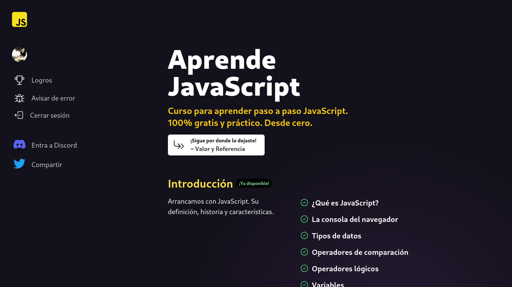
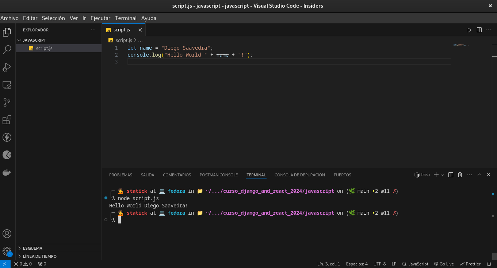
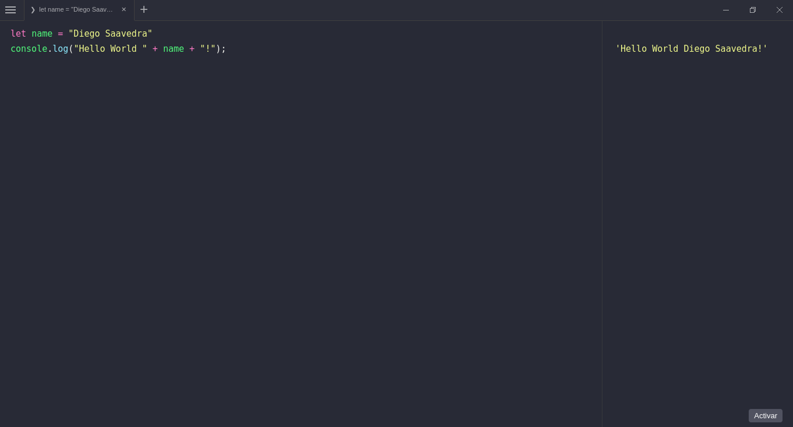
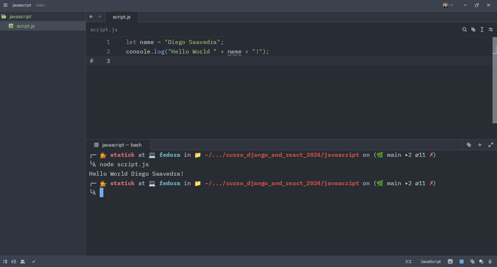
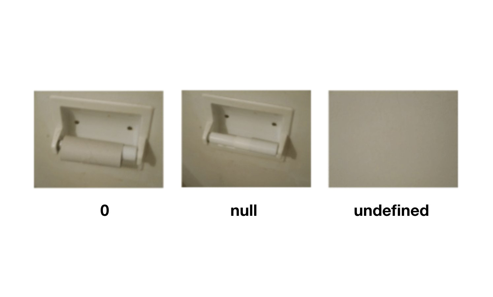
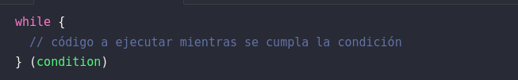
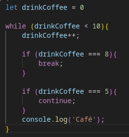
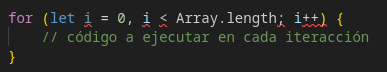
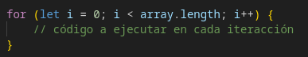

JavaScript
::: {.justify}

Esté capítulo está basado en el Curso de “Aprende JavaScript” en la url AprendeJavaScript.dev creado por Miguel Ángel Midudev, el cual es un desarrollador FullStack y Creador de Contenido, sin más que agregar comencemos.

¿Qué es JavaScript?
JavaScript es uno de los lenguajes de programación más usados y populares del mundo. Nació en 1995 para darle interactividad a las páginas web y desde entonces ha evolucionado hasta convertirse en un lenguaje de programación de propósito general. Dicho de otra forma: se puede usar casi para cualquier cosa.
¿Qué es programar?
Es el acto de construir un programa o conjunto de instrucciones para decirle a una computadora qué y cómo queremos que haga algo. No es diferente a cuando “programamos” la lavadora, sólo que en vez de pulsar un botón, vamos a usar texto. A este texto se le conoce como “código”.
¿Por qué aprender JavaScript?
JavaScript es, a día de hoy, el único lenguaje de programación que todos los navegadores web entienden sin necesidad de realizar ningún paso previo. Esto hace que casi cualquier página web que visitas tiene alguna línea de JavaScript en su interior.
Su curva de aprendizaje para iniciarte es muy corta ya que en muy poco tiempo puedes empezar a hacer cosas interesantes. Para alcanzar a ser un buen programador en JavaScript necesitarás años de práctica, pero para empezar a hacer cosas interesantes bastará con poco tiempo.
Por si fuera poco, JavaScript es uno de los lenguajes de programación más demandados en el mercado laboral. Es normal, ya que es un lenguaje muy versátil y que se puede usar para casi cualquier cosa.
Además, con JavaScript vas a poder desarrollar casi cualquier cosa que te propongas. Desde aplicaciones web, móviles y de escritorio a backend, videojuegos, inteligencia artificial, Internet de las cosas. Todo un mundo de posibilidades con un sólo lenguaje.
Quiz
¿JavaScript sólo se puede usar para crear páginas web?
✗Verdadero
✓Falso
¿Qué es programar en el mundo del software?
✗Crear páginas web y que el usuario pueda usarlas
✓Es el acto de construir un programa o conjunto de instrucciones para decirle a una comptuadora qué y cómo queremos que haga algo
✗Cualquier cosa que hagamos en un ordenador
Editores y entornos de desarrollo
En la actualidad existen muchos editores de código y entornos de desarrollo que nos permiten escribir código de forma más cómoda y eficiente. Algunos de los más populares son:
Visual Studio Code: Es uno de los editores de código más populares y es el que usaremos en este curso.

Runjs: Un entorno de desarrollo online que nos permite escribir código JavaScript y ver el resultado en tiempo real.

Zed Code Editor: Un editor de código muy sencillo y minimalista.

Tipos de Datos
En JavaScript, como cualquier otro lenguaje de programación, vamos a querer trasladar la información del mundo real a nuestro código. Para ello, necesitamos entender qué tipos de datos existen en el lenguaje para poder representar la información que necesitamos.
En JavaScript tenemos 9 tipos de datos que se dividen en dos grandes grupos: primitivos o no primitivos.
Tipos Primitivos.
Dentro de los tipos primitivos tenemos 7 tipos de datos:
- number
- string
- boolean
- null
- undefined
- symbol
- bigint
No te preocupes, no tienes ni recordarlos ni entenderlos todos ahora. En esta lección vamos a ver los tres primeros que son, sin ninguna duda, los que más vamos a usar al inicio del curso.
Números
Los números (tipo number) son los datos más básicos que podemos representar en JavaScript. En JavaScript, no hay una diferencia entre números enteros y números decimales, todos los números son de tipo number:
7
3.14
19.95
2.998e8
-1Operadores aritméticos
Con los números, puedes usar los operadores aritméticos para realizar operaciones matemáticas. En JavaScript tenemos los siguientes operadores aritméticos:
- +: suma
- -: resta
- *: multiplicación
- /: división
- %: módulo (resto de la división)
- **: exponente
Al usar los operadores aritméticos, el resultado siempre será un número. Por ejemplo:
2 + 2 // 4
4 - 2 // 2
3 * 2 // 6
2 / 2 // 1
2 % 2 // 0
3 ** 3 // 27¿Qué significa el // que ves en los ejemplos?
Es un comentario. En JavaScript, los comentarios se escriben con // y todo lo que escribas después de`// será ignorado por el navegador. Los comentarios son muy útiles para explicar qué hace nuestro código.
Al igual que las matemáticas, las operaciones siguen un orden de precedencia. Por ejemplo, si queremos calcular el resultado de 2 + 2 * 3, primero se multiplicará 2 * 3 y luego se sumará 2 + 6. El resultado será 8.
También puedes usar paréntesis para cambiar el orden de las operaciones.
2 + 2 * 3 // 8
(2 + 2) * 3 // 12Cadenas de texto
La cadena de texto (tipo string) es otro tipo de dato muy común. En JavaScript, las cadenas de texto se representan entre comillas simples, dobles o acentos graves:
'Estás aprendiendo JavaScript'
"JavaScript te va a gustar"
`Esto es una cadena de texto`Las comillas simples y dobles funcionan igual, pero al usar acentos graves podemos escribir cadenas de texto que ocupen varias líneas:
`Esto es una cadena de texto
que ocupa varias líneas. Puedes escribir
tantas líneas como quieras`Concatenación
Para unir dos cadenas de texto, podemos usar el operador +:
'Estás aprendiendo ' + 'JavaScript' // 'Estás aprendiendo JavaScript'Como ves, el operador + de concatenación de cadenas de texto es visualmente el mismo que el operador + de suma de números. El operador + funciona de forma diferente dependiendo del tipo de dato que estemos usando.
Booleanos
Los booleanos representa sólo dos valores: true (verdadero) o false (falso). Por ejemplo:
- ¿La luz está encendida (true) o apagada (false)?
- ¿Está lloviendo (true) o no está lloviendo (false)?
- ¿Está el usuario logueado (true) o no está logueado (false)?
Estos son ejemplos de preguntas que podemos responder con un valor booleano.
- true
- false
Quiz
¿Cuántos tipos de datos existen en JavaScript?
✗Sólo existen 2 tipos de datos
✓9 tipos de datos que se dividen en dos grandes grupos
¿Cuántos valores se pueden representar en el tipo de dato Boolean?
✗true y false
✓Cualquier valor que se te ocurra
✗Números, cadenas de texto y verdadero/falso.
El operador + se utiliza para…
✗Sólo sirve para sumar dos números
✗Concatenar dos textos
✓Depende del tipo de dato que se esté utilizando
Los operadores de comparación
Los operadores de comparación en JavaScript nos permiten comparar dos valores. Siempre devuelven un valor booleano (true o false).
Por ejemplo, podemos comparar si un número es mayor que otro con el operador >, o si un número es menor que otro con el operador <.
5 > 3 // true
5 < 3 // falseTambién tenemos los operadores >= y <= que nos permiten comparar si un número es mayor o igual que otro, o si un número es menor o igual que otro.
5 >= 3 // true
5 >= 5 // true
5 <= 3 // false
5 <= 5 // truePara saber si dos valores son iguales podemos usar el operador === o, para saber si son diferentes, el operador !==.
5 === 5 // true
5 !== 5 // falseActividad
Escribe un código que compruebe si 10 es mayor o igual que 9
Comprueba que 0 es igual a 0
Respuesta
R1.
10 >= 9 // trueR2.
0 === 0 // trueComparando cadenas de texto
No sólo podemos usar los comparadores para comparar números, también podemos usarlos para comparar cadenas de texto y otros tipos de datos.
'JavaScript' === 'JavaScript' // true
'JavaScript' === 'Java' // false
"JavaScript" !== 'PHP' // true
`Estoy Aprendiendo JavaScript` === 'Estoy Aprendiendo JavaScript' // trueFíjate que puedes comparar cadenas de texto que usan comillas simples, dobles o acentos graves. Al final, siguen siendo cadenas de texto y lo importante es que sean iguales.
¿Y si usamos el operador > con cadenas de texto?
Aunque no es muy común, podemos usar los operadores > , >=, < y <= para comparar cadenas de texto.
JavaScript comparará las cadenas de texto según el valor de su código Unicode.
Por ejemplo, la letra A tiene un valor de 65 y la letra B tiene un valor de 66. Por lo tanto, la letra A es menor que la letra B. Pero ten cuidado, ya que las letras mayúsculas tienen un valor menor que las letras minúsculas.
'Alfa' > 'Beta' // false
'Omega' > 'Beta' // true
'alfa' > 'Alfa' // trueComparando booleanos
También podemos comparar booleanos con los operadores de comparación.
true === true // true
true === false // false
false !== false // falsePor si te preguntas cómo se comportan los operadores de mayor o menor que (> y <) con booleanos te diré que, aunque no tiene sentido, debes saber que true es mayor que false.
true > false // true
false < true // true
true > true // false
false < false // falseComparando valores de diferentes tipos
Por ahora hemos visto cómo comparar valores de un mismo tipo, pero ¿Qué pasa si queremos comparar valores de diferentes tipos? En JavaScript es algo que es posible pero no suele ser recomendable.
En clases posteriores veremos cómo funciona este tipo de mecanismo y explicaremos el operador de igualdad débil == y el operador de desigualdad débil != pero, por ahora, nos limitaremos a utilizar siempre el operador de igualdad estricta === y el operador de desigualdad estricta !==.
Quiz
¿Cuál es el resultado de 24 > 12?
✓true
✗false
Los operadores de compración solo se pueden usar con números
✗Sí, sólo ahí tiene sentido
✓No, se pueden usar con otros tipos de datos como cadenas de textos o boleanos
Operadores lógicos en JavaScript
Los operadores lógicos en JavaScript (y en muchos otros lenguajes de programación) se utilizan para evaluar expresiones lógicas.
En JavaScript, hay tres operadores lógicos: AND (&&), OR (||) y NOT (!).
Operador lógico AND &&
El operador lógico AND se indica con &&. Devuelve true cuando ambos valores que conecta son true.
true && true // → true
true && false // → false
false && false // → falseUn ejemplo en la vida real sería preguntar. ¿Están todas las luces encendidas? Se comprueba cada luz y si todas están encendidas (true), entonces la respuesta es true. Si alguna luz está apagada (false), entonces la respuesta es false.
Operador lógico OR ||
El operador lógico OR se indica con || y devuelve true cuando cualquiera de los valores que conecta es true.
true || true // → true
true || false // → true
false || false // → falseUn ejemplo en la vida real sería preguntar. ¿Hay alguna luz encendida? Se comprueba cada luz y si alguna está encendida (true), entonces la respuesta es true. Sólo si todas las luces están apagadas (false), entonces la respuesta es false.
Operador lógico NOT !
El operador lógico NOT se indica con ! e invierte el valor de un valor booleano. Se pone delante del valor que queremos invertir.
!true // → false
!false // → trueUn ejemplo en la vida real sería pulsar el interruptor de la luz. Si la luz está encendida (true), entonces pulsando el interruptor la apagamos (false). Si la luz está apagada (false), entonces pulsando el interruptor la encendemos (true).
Combinando operadores lógicos, aritméticos y de comparación
Los operadores lógicos y los operadores de comparación se pueden combinar para crear expresiones más complejas. Por ejemplo, podemos preguntar si un número está entre dos valores.
2 < 3 && 3 < 4 // → trueEn este caso, la expresión se evalúa como true porque 2 < 3 es true y 3 < 4 es true. Si cualquiera de las dos expresiones fuera false, entonces la expresión sería false.
También puedes usar paréntesis para agrupar operaciones y usar operadores lógicos y aritméticos.
(2 + 2) < 3 && (10 < (8 * 2)) // → falseIgualmente, es importante que sepas que las operaciones aritméticas tienen precedencia sobre las operaciones de comparación.
2 + 2 < 3 && 10 < 8 * 2
// Primero se hacen las operaciones aritméticas:
// → 4 < 3 && 10 < 16
// Ahora las comparaciones:
// → false && true
// Finalmente:
// → falseActividad
Comprueba si 7 es mayor que 8 y menor que 10
Tenemos un producto en una tienda. Cuesta 1500 y tenemos un descuento del 25%. Tengo $1150 en mi billetera. Escribe un código que me diga si puedo comprarlo. No utilizar parentesis.
Respuesta
R1.
7 > 8 && 7 < 10 // falseR2.
1150 >= 1500 * 0.75 // falseDos o más operandos
Aunque todos los ejemplos que has visto hasta ahora usan dos operandos, los operadores lógicos también pueden usarse con más de dos operandos.
true && true && true // → trueTambién puedes mezclar operadores lógicos:
true && true || false // → true
!true && !true // → false
false && true || !true // → falseAhora te puede costar un poco entender qué está pasando, pero con la práctica te irá resultando más fácil. Prueba a hacer los ejercicios y a jugar con los operadores lógicos para que te vayan quedando más claros.
Quiz
¿Qué operador lógico se utiliza para comprobar si dos o más condiciones son verdaderas?
✗OR (||)
✓AND (&&)
¿Qué operador lógico se utiliza para invertir el valor de un booleano?
✗OR (||)
✓NOT (!)
¿Qué valor devuelve la expresión false || true?
✗false
✓true
Variables
A la hora de crear programas, es vital poder almacenar la información para poder utilizarla en un futuro. En JavaScript, usamos variables para conseguirlo.
Para crear una variable podemos usar la palabra reservada let y le damos un nombre a la variable. Por ejemplo:
let numeroTenemos una variable llamada numero pero no le hemos asignado ningún valor. Para asignarle un valor, usamos el operador de asignación =:
let numero = 1Ahora, podemos referirnos a la variable numero y obtener el valor que le hemos asignado.
numero + 1 // -> 1 + 1También podemos reasignarle un valor a la variable:
numero = 5
numero + 1 // -> 5 + 1¡Ojo! Si no guardas el valor de esta nueva operación, el valor de la variable numero seguirá siendo 5.
numero = 5
numero + 1 // -> 5 + 1
numero + 1 // -> 5 + 1Ten en cuenta que el valor de la variable no tiene porque ser un número. Puede ser cualquier tipo de dato, como un texto o un booleano.
let welcomeText = 'Hola'
let isCool = trueActividad
Crea una variable llamada mensaje y asígnale el valor “Hola JavaScript”
Crea una variable llamada resultado y asígnale la suma de 2 y 3
Respuesta
R1.
let mensaje = 'Hola JavaScript'R2.
let resultado = 2 + 3Constantes const
Las constantes son variables que no pueden ser reasignadas. Para crear una constante, usamos la palabra reservada const:
const PI = 3.1415Si intentas reasignar el valor de una constante, obtendrás un error:
PI = 3 // -> TypeError: Assignment to constant variable.Como no se pueden reasignar, las constantes siempre deben ser inicializadas con algún valor. Esto es otra diferencia respecto a let, que no es necesario inicializarla con un valor.
let numero // ✅
const RADIUS // ❌ SyntaxError: Missing initializer in const declarationSon muy útiles para almacenar valores que no van a cambiar. Siempre que puedas, procura usar constantes para que tu código sea más predecible.
Actividad
- Crea una constante llamada IS_DISABLED y asígnale el booleano true
Respuesta
const IS_DISABLED = trueVariables var
En JavaScript, también podemos crear variables usando la palabra reservada var. Es la forma más antigua y es normal que encuentres muchos tutoriales que lo usen. Sin embargo, a día de hoy, no es recomendable usar var ya que tiene comportamientos extraños que pueden causar errores en tu código.
En una clase posterior te explicaré cuál es la diferencia entre let, const y var además de por qué, siempre que puedas, deberías evitar var.
El nombre de las variables
En JavaScript, los nombres de las variables pueden contener letras, números y el guión bajo (_). Además, el primer carácter del nombre de la variable no puede ser un número.
Es importante tener en cuenta que los nombres de las variables son sensibles a las mayúsculas y minúsculas, lo que significa que miVariable y mivariable son dos variables diferentes en JavaScript.
let miVariable = 1
let mivariable = 2
miVariable + mivariable // -> 1 + 2También es importante que los nombres de las variables sean descriptivos. Por ejemplo, si queremos almacenar el nombre de un usuario, podemos llamar a la variable userName. De esta forma, cuando leamos el código, sabremos que la variable contiene el nombre de un usuario.
let n = 'Pepe' // ❌ Mal, no es descriptivo
let userName = 'Juan' // ✅ Bien, se entiendeConvenciones y nomenclaturas
En JavaScript, existen diferentes nomenclaturas para nombrar las variables: camelCase, snake_case y SCREAMING_CASE.
camelCase es la forma más común de nombrar las variables en JavaScript. Consiste en escribir la primera palabra en minúsculas y las siguientes palabras con su primera letra en mayúsculas. Por ejemplo:
let camelCase = 1
let camelCaseIsCool = 2
let userName = 'statick'snake_case es una forma de nombrar que consiste en escribir todas las palabras en minúsculas y separarlas con guiones bajos. Por ejemplo:
let snake_case = 1
let snake_case_is_cool = 2
let user_name = 'statick'En algunos lenguajes de programación es muy común usar snake_case para nombrar las variables. En JavaScript no lo es tanto, pero todavía puedes encontrar código que lo use.
Lo más habitual, y es buena idea, es usarlo en los nombres de archivos. Por ejemplo, mi_archivo.js. Esto es porque algunos sistemas operativos distinguen entre mayúsculas y minúsculas y, por tanto, mi_archivo.js y Mi_archivo.js son dos archivos diferentes.
También existe kebab-case, que es una forma de nombrar que consiste en escribir todas las palabras en minúsculas y separarlas con guiones. Por ejemplo: mi-archivo.js. Es muy similar a snake_case pero con guiones en vez de guiones bajos. No se puede usar para nombrar variables pero sí es común usarlo en los nombres de archivos.
SCREAMING_CASE es una forma de nombrar que consiste en escribir todas las palabras en mayúsculas y separarlas con guiones bajos. Por ejemplo:
const SCREAMING_CASE = 1
const SCREAMING_CASE_IS_COOL = 2
const USER_NAME = 'statick'Para las constantes, con valores que no van a cambiar, es muy común usar SCREAMING_CASE. Así se puede distinguir fácilmente de las variables que sí cambian de valor. Por eso, no debes usarla para nombrar variables con let.
Quiz
¿Qué es una variable?
✓En JavaScript, una variable es un contenedor de información que se utiliza para almacenar datos en un programa.
✗Una variable es un tipo de dato que se utiliza para almacenar información en un programa.
¿Qué peculiaridad tienen las variables const en JavaScript?
✓No se pueden reasignar
✗Sólo pueden guardar números
Siempre hay que asignar un valor a una variable
✗Sí, siempre
✗No, nunca
✓Sólo si es una variable const
null y undefined
¿Recuerdas que te he comentado que existen diferentes tipos de datos en JavaScript? Hemos visto números, cadenas de texto y booleanos.
En esta clase vas a aprender otros dos tipos de datos que, aunque son similares, tienen ligeras diferencias. Son null y undefined.
La particularidad de estos dos tipos de datos es que cada uno sólo tiene un valor. El tipo null sólo puede tener el valor null y el tipo undefined sólo puede tener el valor undefined.
Es como el tipo booleano que podía ser true y false pero, en este caso, sólo tiene un valor.
La diferencia entre null y undefined
Mientras que null es un valor que significa que algo no tiene valor, undefined significa que algo no ha sido definido. Por ejemplo, si creamos una variable sin asignarle ningún valor, su valor será undefined:
let rolloDePapel // -> undefinedTambién podemos asignar directamente el valor undefined a una variable:
let rolloDePapel = undefined // -> undefinedEn cambio, para que una variable tenga el valor null, sólo podemos conseguirlo asignándole explícitamente ese valor:
let rolloDePapel = nullUn caso bastante ilustrativo para entender la diferencia entre null y undefined es el siguiente:

Actividad
Crea una variable con let llamada capacidad y asígnale un valor null
Crea una variable con let llamada dinero y asegúrate que tenga un valor de undefined
Respuesta
R1.
let capacidad = nullR2.
let dineroComparaciones con null y undefined
Al usar la igualdad estricta que hemos visto en la clase anterior, null y undefined son considerados diferentes entre sí:
null === undefined // -\> falseSólo cuando comparamos null con null o undefined con undefined obtenemos true:
null === null // -\> true undefined === undefined // -\> trueQuiz
null y undefined son dos valores que significan lo mismo.
✗Sí, ambos indican la ausencia de valor.
✓No, null es un valor que indica algo vacío, mientras que undefined indica algo que no está definido todavía.
¿Qué valor tiene una variable a la que no se le ha asignado nada al declararla?
✗Un valor null
✓Un valor undefined
✗No se puede declarar a una variable sin asignar un valor
Operador typeof
El operador typeof devuelve una cadena de texto que indica el tipo de un operando. Puede ser usado con cualquier tipo de operando, incluyendo variables y literales.
const MAGIC_NUMBER = 7
typeof MAGIC_NUMBER // "number"También puedes usarlo directamente con los valores que quieras comprobar:
typeof undefined // "undefined"
typeof true // "boolean"
typeof 42 // "number"
typeof "Hola mundo" // "string"Actividad
- Tengo una variable llamada userName. Excribe el código necesario para ver su tipo.
Respuesta
let userName
typeof userName // "undefined"Existe, sin embargo, un valor especial en JavaScript, null, que es considerado un bug en el lenguaje. El operador typeof devuelve “object” cuando se usa con null:
typeof null // "object"Lo correcto sería que typeof null devolviera “null”, pero es un error histórico que no se puede corregir sin romper el código existente.
Por eso, si quieres comprobar si una variable es null, debes usar la comparación estricta ===:
const foo = null
foo === null // trueOtra pregunta es… ¿Qué es ese object? Es un tipo de dato que está en el centro de JavaScript y que veremos en detalle más adelante.
Usando con operadores de comparación
El operador typeof es muy útil cuando se usa con operadores de comparación. Por ejemplo, para comprobar si una variable es del tipo que esperamos:
const age = 42
typeof age === "number" // trueUna vez que tenemos expresiones lógicas, podemos empezar a encadenar operadores lógicos para comprobar múltiples condiciones:
const age = 42
typeof age === "number" && age > 18 // trueActividad
- Tengo una variable llamada dogId pero no tengo claro si es una cadena de texto. Escribe el código necesario para asegurarte.
Respuesta
typeof dogId === "string" // falseQuiz
¿Para qué sirve el operador typeof en JavaScript?
✗Nos permite leer el valor de una variable
✓Nos da el tipo de dato de una variable
El operador typeof siempre devuelve una cadena de texto con el tipo del operando.
✓Si, siempre devuelve una cadena de texto
✗Depende del tipo de dato que le pasemos, Si le pasamos un número, nos devolverá un number
Comentarios
En JavaScript, los comentarios son una forma de agregar explicaciones al código que se ignora al ejecutar el programa.
Los comentarios son útiles para explicar el por qué del código, documentar los cambios realizados en el código y hacer que el código sea más fácil de entender para otros desarrolladores.
Hay dos tipos de comentarios en JavaScript: los comentarios de una sola línea y los comentarios de varias líneas.
Comentarios de una sola línea //
Los comentarios de una sola línea comienzan con // y se utilizan para agregar una explicación en una sola línea de código. Por ejemplo:
// Sólo usamos 6 decimales
const PI = 3.141592
// Iniciamos el radio por 10, pero puede cambiar
let radio = 10También puedes añadir un comentario de una sola línea al final de una línea de código. Por ejemplo:
const PI = 3.141592 // Sólo usamos 6 decimalesComentarios de varias líneas /* */
Los comentarios de varias líneas comienzan con /* y terminan con */. Se utilizan para agregar notas explicativas que ocupan varias líneas de código. Por ejemplo:
/*
Este es un comentario de varias líneas.
Se utiliza para agregar notas explicativas que ocupan varias líneas de código.
*/Ten en cuenta que también puedes lograr varias líneas usando el tipo de comentario //, sólo que en este caso, cada línea de código debe comenzar con //. Por ejemplo:
// Este es un comentario de varias líneas.
// Se utiliza para agregar notas explicativas que ocupan varias líneas de código.Es importante tener en cuenta que los comentarios no afectan el funcionamiento del código. Es decir, si se eliminan los comentarios, el código seguirá funcionando de la misma manera.
Es recomendable utilizar comentarios con moderación y de manera efectiva para hacer que el código sea más fácil de entender y mantener. Los comentarios deben ser claros y concisos, y deben explicar lo que hace el código sin repetir lo que ya es obvio.
Es mejor que tu código sea lo suficientemente claro como para no necesitar comentarios, pero si es necesario, utiliza comentarios para explicar el por qué del código, no el qué.
Quiz
¿Para qué sirven los comentarios en JavaScript?
✓Sirven para documentar nuestro código y explicar qué hace cada parte de él
✗Para cambiar el comportamiento de nuestro código
¿Cómo se escriben los comentarios en JavaScript?
✗Puedes usar # para escribir comentarios de una línea o varias
✓Puedes usar // para escribir comentarios de una línea o /* */ para escribir comentarios de varias líneas
console.log()
console.log() es una función integrada en JavaScript que se utiliza para imprimir mensajes en la consola del navegador o del editor de código. Se utiliza principalmente para depurar el código y para imprimir valores de variables y mensajes para ayudar en el proceso de desarrollo.
En programación, una función es un conjunto de instrucciones que se pueden usar una y otra vez para hacer una tarea específica. Muchas veces, las funciones se utilizan para evitar repetir código y son parametrizables. Más adelante tendremos una sección sólo para ellas.
Sintaxis
Para poder mostrar estos mensajes en consola, debes escribir console.log() y dentro de los paréntesis, el mensaje que quieres mostrar.
console.log('Hola, JavaScript')
// -> 'Hola, JavaScript'También puedes averiguar el valor de una variable, escribiendo el nombre de la variable dentro de los paréntesis.
const nombre = 'JavaScript'
console.log(nombre)
// -> 'JavaScript'Como ya sabes concatenar cadenas de texto, puedes mostrar un mensaje y el valor de una variable en el mismo console.log().
const nombre = 'JavaScript'
console.log('Hola, ' + nombre)
// -> 'Hola, JavaScript'Además, puedes mostrar varios mensajes y valores de variables en el mismo console.log() separándolos por comas.
const nombre = 'JavaScript'
const version = 2023
console.log(nombre, version)
// -> 'JavaScript 2023'Más métodos de console
Además de console.log(), existen otros métodos que puedes utilizar para imprimir mensajes en la consola. Algunos de ellos son:
console.error(): Imprime un mensaje de error en la consola.
console.warn(): Imprime un mensaje de advertencia en la consola.
console.info(): Imprime un mensaje de información en la consola.
Como ves, la sintaxis es la misma que console.log(), sólo cambia el nombre del método.
Aunque puedes usar console.log() para imprimir cualquier tipo de mensaje, es recomendable utilizar los métodos que acabamos de ver para imprimir mensajes de error, advertencia e información ya que tienen un formato especial que los hace más fáciles de identificar.
console.error('Error')
// ❌ Error
console.warn('Advertencia')
// ⚠️ Advertencia
console.info('Información')
// ℹ️ InformaciónPrueba estos métodos en la consola del navegador y observa los resultados.
Quiz
¿Cuál es la sintaxis adecuada para imprimir un mensaje en la consola del navegador?
✗console(“mensaje”)
✓console.log(“mensaje”)
✗console.write(“mensaje”)
¿Cómo podrías usar console.log() para imprimir múltiples valores o variables en una sola línea de código?
✗Utilizando una sintaxis especial que formatea los valores o variables en una sola línea de código
✗No es posible imprimir múltiples valores o variables en una sola línea de código con console.log()
✓Separando cada valor o variable con comas dentro de los paréntesis de console.log()
¿Cuál es la diferencia entre console.log() y console.error() en JavaScript?
✓console.log() se utiliza para imprimir mensajes en la consola del navegador, mientras que console.error() se utiliza para imprimir mensajes de error.
✗console.log() se utiliza para imprimir mensajes de error en la consola del navegador, mientras que console.error() se utiliza para imprimir mensajes normales
✗No hay diferencia entre console.log() y console.error() en JavaScript
Código Condicional con if
El código condicional es un bloque de código que se ejecuta sólo si se cumple una condición. En JavaScript usamos la palabra reservada if para crear un bloque condicional, así:
if (condición) {
// código que se ejecuta si la condición es verdadera
}Como ves, ponemos la condición entre paréntesis y el código se ejecuta si la condición entre llaves es true. Si la condición es false, el código no se ejecuta.
Imagina que quieres mostrar un mensaje si la edad de un usuario es mayor o igual a 18 años. Podrías hacerlo así:
const edad = 18
if (edad >= 18) {
console.log('Eres mayor de edad')
}else
Es posible utilizar la palabra clave else para ejecutar un bloque de código diferente si la condición es falsa:
const edad = 17
if (edad >= 18) {
console.log('Eres mayor de edad')
} else {
console.log('Eres menor de edad')
}Esto es útil para ejecutar un bloque de código u otro dependiendo de si se cumple o no una condición. else if
También podemos utilizar la palabra clave else if para comprobar más de una condición:
const edad = 17
if (edad >= 18) {
console.log('Eres mayor de edad')
} else if (edad >= 16) {
console.log('Eres casi mayor de edad')
} else {
console.log('Eres menor de edad')
}El programa comprueba la primera condición. Si es true, ejecuta el código dentro del bloque if. Si es false, comprueba la siguiente condición. Si es true, ejecuta el código dentro del bloque else if. Si es false, ejecuta el código dentro del bloque else.
Dicho de otra forma, entrará en el primer bloque que cumpla la condición y no entrará en los demás. Si no cumple ninguna, entonces entrará en el bloque else.
Anidación de condicionales
Es posible anidar condicionales dentro de otros condicionales. Por ejemplo:
const edad = 17
const tieneCarnet = true
if (edad >= 18) {
if (tieneCarnet) {
console.log('Puedes conducir')
} else {
console.log('No puedes conducir')
}
} else {
console.log('No puedes conducir')
}En muchas ocasiones vas a querer evitar la anidación innecesaria de condicionales ya que se hacen difíciles de leer y mantener. En estos casos es mejor utilizar operadores lógicos para crear la condición:
const edad = 17
const tieneCarnet = true
// si es mayor de edad y tiene carnet entonces...
if (edad >= 18 && tieneCarnet) {
console.log('Puedes conducir')
} else {
console.log('No puedes conducir')
}Otra técnica muy interesante es la de guardar el resultado de la condición en una variable, para que tus condiciones sean mucho más legibles:
const edad = 17
const tieneCarnet = true
const puedeConducir = edad >= 18 && tieneCarnet
if (puedeConducir) {
console.log('Puedes conducir')
} else {
console.log('No puedes conducir')
}¡Wow! ¿Has visto cómo hemos mejorado la legibilidad de nuestro código? ¡Es mucho más fácil de leer y entender! A este tipo de técnica se le llama refactorización y consiste en mejorar el código sin cambiar su comportamiento.
La importancia de las llaves
Es importante que sepas que las llaves { } no siempre son obligatorios. Si el bloque de código sólo tiene una línea, puedes omitir las llaves:
const edad = 17
if (edad >= 18)
console.log('Eres mayor de edad')
else
console.log('Eres menor de edad')También lo puedes escribir en la misma línea:
const edad = 18
if (edad >= 18) console.log('Eres mayor de edad')
else console.log('Eres menor de edad')Sin embargo, te recomiendo que mientras estés aprendiendo siempre escribas las llaves. Esto te ayudará a evitar errores y a que tu código sea más legible.
Quiz
¿Qué es un bloque condicional en JavaScript?
✓Un bloque de código que se ejecuta sólo si se cumple una condición
✗Un bloque de código que se ejecuta siempre
¿Qué palabra clave se utiliza en JavaScript para crear un bloque condicional?
✗if
✓else
✗then
¿Qué palabra clave se utiliza en JavaScript para ejecutar un bloque de código si la condición de un bloque condicional es falsa?
✗if
✗then
✓else
Actividad
Crea una variable llamada temperatura y asígnale un valor numérico. Escribe un bloque condicional que imprima en la consola si la temperatura es mayor o igual a 25 grados.
Crea una variable llamada esVerano y asígnale un valor booleano. Escribe un bloque condicional que imprima en la consola si es verano o no.
Respuesta
R1.
const temperatura = 25
if (temperatura >= 25) {
console.log('Hace calor')
}R2.
const esVerano = true
if (esVerano) {
console.log('Es verano')
}Bucles con while
Un bucle es una estructura de control que permite repetir un bloque de instrucciones. Vamos, repetir una tarea tantas veces como queramos.
En JavaScript, existen varias formas de lograrlo, y una de ellas es el bucle con while. El bucle while es una estructura de control de flujo que ejecuta una sección de código mientras se cumple una determinada condición.
En esta clase, vamos a explicar cómo funciona el bucle while en JavaScript y cómo podemos utilizarlo en nuestros programas.
Sintaxis
La sintaxis del bucle while es similar a la de un condicional if. La única diferencia es que, en lugar de ejecutar el código una sola vez, se ejecuta mientras se cumpla la condición.
while (condición) {
// código a ejecutar mientras se cumpla la condición
}El bucle comienza evaluando la condición dentro de los paréntesis. Si la condición es true, se ejecuta el código dentro de las llaves.
Después de ejecutar el código, la condición se evalúa de nuevo, y si sigue siendo verdadera, el código dentro de las llaves se ejecuta de nuevo. Este proceso se repite hasta que la condición se evalúa como falsa.
Ten en cuenta que, si la condición es falsa desde el principio, el código dentro de las llaves nunca se ejecutará.
A cada vuelta del bucle se le llama iteración. Una iteración es la repetición de un proceso o acción un número determinado de veces, de manera ordenada y sistemática.
Ejemplo de uso de while
Vamos a crear la cuenta atrás de un cohete. Creamos una variable cuentaAtras que contenga el número de segundos que faltan para el lanzamiento. En este caso, vamos a empezar con 10 segundos.
let cuentaAtras = 10Para quitarle un segundo a la cuenta atrás, vamos a utilizar el operador de resta (-) y el operador de asignación (=).
let cuentaAtras = 10
cuentaAtras = cuentaAtras - 1
console.log(cuentaAtras) // -> 9Sabiendo esto y cómo funciona el bucle while, podemos crear la cuenta atrás del cohete.
// iniciamos la variable fuera del bucle
let cuentaAtras = 10
// mientras la cuenta atrás sea mayor que 0
while (cuentaAtras > 0) {
// mostramos el valor de la cuenta atrás en cada iteración
console.log(cuentaAtras)
// restamos 1 a la cuenta atrás
cuentaAtras = cuentaAtras - 1
}
console.log('¡Despegue! 🚀')Si ejecutas este código en consola, deberías ver los números del 10 al 1, y después el mensaje de despegue.
Cuidado con los bucles infinitos
Los bucles while son muy potentes, pero también pueden ser peligrosos. Si la condición nunca se evalúa como falsa, el bucle se ejecutará infinitamente.
while (true) {
console.log('¡Hola hasta el infinito!')
}Esto evaluará la condición true como verdadera, y ejecutará el código dentro de las llaves una y otra vez.
Saliendo de un bucle con break
Podemos controlar cuándo queremos salir de un bucle utilizando la palabra reservada break. Cuando el intérprete de JavaScript encuentra la palabra break, sale del bucle y continúa ejecutando el código que haya después.
let cuentaAtras = 10
while (cuentaAtras > 0) {
console.log(cuentaAtras)
cuentaAtras = cuentaAtras - 1
// si la cuenta atrás es 5, salimos del bucle
if (cuentaAtras === 5) {
break // <---- salimos del bucle
}
}¿Cuál es el valor de cuentaAtras en este código? Veamos, el bucle estaba haciendo una cuenta atrás… pero le hemos dicho que cuando tuviese el valor 5 saliese del bucle. Por lo tanto, el valor de cuentaAtras es 5.
Usar break puede ser útil en bucles si queremos salir de ellos por alguna condición en concreto o para evitar justamente los bucles infinitos.
Saltando una iteración con continue
Igual que tenemos la posibilidad de “romper” el bucle con break, también podemos saltarnos una iteración con continue. Cuando el intérprete de JavaScript encuentra la palabra continue, salta a la siguiente iteración del bucle.
let cuentaAtras = 10
while (cuentaAtras > 0) {
cuentaAtras = cuentaAtras - 1
// si la cuenta atrás es un número par...
if (cuentaAtras % 2 === 0) {
continue // <---- saltamos a la siguiente iteración
}
console.log(cuentaAtras)
}¿Qué aparece en la salida de la consola? El bucle está haciendo una cuenta atrás… pero le hemos dicho que si el número es par, se salte esa iteración y deje de ejecutar el código que le sigue.
Por ello, los números pares no aparecen en la consola.
Anidación de bucles
Podemos anidar bucles dentro de otros bucles. Imagina que en nuestra cuenta atrás para el cohete, tenemos que revisar que 3 cosas están en sus parámetros: el oxígeno, el combustible y la temperatura.
const NUMERO_REVISIONES = 3
let cuentaAtras = 10
// mientras la cuenta atrás sea mayor que 0
while (cuentaAtras > 0) {
// mostramos el valor de la cuenta atrás
console.log(cuentaAtras)
// creamos una variable para contar las revisiones realizadas
// y la inicializamos a cero
let revisionesRealizadas = 0
// hasta que no hayamos realizado las 3 revisiones...
while (revisionesRealizadas < NUMERO_REVISIONES) {
// y sumamos 1 a las revisiones realizadas
revisionesRealizadas = revisionesRealizadas + 1
console.log(revisionesRealizadas + ' revisiones realizadas...')
}
// ahora podemos restar 1 a la cuenta atrás
cuentaAtras = cuentaAtras - 1
}¿Por qué la constante la hemos puesto toda en mayúsculas? Como ya explicamos en la clase de introducción a JavaScript, es una convención para indicar que es una constante y que no va a cambiar.
Además del bucle anidado, hay algo también muy interesante en el código anterior y es la creación de la variable let revisionesRealizadas.
Ten en cuenta que esa variable se creará y se inicializará a 0 en cada iteración del bucle.
Las variables creadas con let y const que se crean dentro de un bucle, solo existen dentro de ese bucle. Cuando el bucle termina, la variable desaparece. De hecho si intentas acceder a ella fuera del bucle, te dará un error.
let cuentaAtras = 10
while (cuentaAtras > 0) {
let revisionesRealizadas = 3
console.log(revisionesRealizadas)
cuentaAtras = cuentaAtras - 1
}
console.log(revisionesRealizadas) // -> ERROR: ReferenceErrorEsto también pasa con otras estructuras de control. Eso es porque el alcance de las variables creadas con let y const es el bloque entre { } en el que se crean. Lo iremos viendo más adelante para que vayas practicando, no te preocupes.
Quiz
¿Cuál es la sintaxis correcta para utilizar un bucle while en JavaScript?
✓
✗
¿Cuál es la palabra reservada que se utiliza para salir de un bucle en JavaScript?
✓break
✗continue
✗exit
¿Cuántas veces saldrá en consola la palabra ‘Café’?

✓6
✗4
✗5
Bucles con do while
Aunque no es muy famoso ni muy utilizado, es interesante que sepas que existe en JavaScript un bucle que se ejecuta al menos una vez, y luego se repite mientras se cumpla una condición. Este bucle se llama do while y tiene la siguiente sintaxis:
do {
// código que se ejecuta al menos una vez
} while (condición);Vamos a aprovechar para hacer más interesante la clase. Por eso te voy a presentar una función integradas en JavaScript que nos van a dar mucho juego: confirm.
confirm
La función confirm muestra un cuadro de diálogo con dos botones: “Aceptar” y “Cancelar”. Si el usuario pulsa “Aceptar”, la función devuelve true. Si pulsa “Cancelar”, devuelve false.
confirm("¿Te gusta JavaScript?");Llamar a la función confirm es una expresión y, por lo tanto, produce un valor que podemos guardar en una variable.
let respuesta = confirm("¿Te gusta JavaScript?")
console.log(respuesta) // -> true o falseUsando do while
Vamos a hacer un programa que saldrá de un bucle do while cuando el usuario pulse “Cancelar” en el cuadro de diálogo que muestra la función confirm.
let respuesta
do {
respuesta = confirm("¿Te gusta JavaScript?");
} while (respuesta)¿Por qué hay que poner la variable respuesta fuera? Porque si no, no podría ser usada en la condición del bucle. Ya vas viendo lo que comentámos antes del ámbito de las variables.
Si el usuario pulsa “Aceptar”, la variable respuesta valdrá true y el bucle se repetirá. Si el usuario pulsa “Cancelar”, la variable respuesta valdrá false y el bucle se detendrá.
Quiz
¿Cuántas veces como mínimo se ejecutará el código dentro de un bucle do{ … } while?
✗Ninguna vez
✗Depende de la condición
✓Una vez
Expresiones y declaraciones
En JavaScript, existen dos tipos de elementos fundamentales para escribir código: expresiones y declaraciones. Aunque estos términos pueden parecer confusos al principio, son conceptos clave para comprender cómo funciona JavaScript.
Declaraciones
Las declaraciones en JavaScript son sentencias que definen la creación de una variable, función o clase. Podríamos decir que las declaraciones son como las instrucciones que le damos a JavaScript para que haga algo.
Las funciones y las clases las veremos más adelante en el curso, no te preocupes.
Por ejemplo, una declaración de variable es una sentencia que le da un nombre y un valor a una variable. El siguiente código es un ejemplo de una declaración de variable:
let nombre = "Juan"Este código no lo puedes usar con el método console.log, ya que no produce ningún valor. Si lo intentas, obtendrás un error:
console.log(let nombre = "Juan") // SyntaxErrorExpresiones
Las expresiones en JavaScript son sentencias que producen un valor. Las expresiones pueden ser tan simples como un solo número o una cadena de texto, o tan complejas como el cálculo de una operación matemática, la evaluación de diferentes valores o la llamada a una función.
Por ejemplo, una expresión numérica es una sentencia que produce un número:
2 + 3 // -> 5De hecho, lo que guardamos en las variables son expresiones. Por ejemplo, en el siguiente código, la expresión 2 + 3 se evalúa y el resultado se guarda en la variable resultado:
let resultado = 2 + 3En ese código tenemos la declaración que queremos guardar en la variable resultado el resultado de la expresión 2 + 3.
¿Por qué es importante la diferencia?
La diferencia entre declaraciones y expresiones es importante ya que no podemos usar una declaración donde se espera una expresión y viceversa.
Por ejemplo, ya hemos conocido las estructuras de control if y while. Ambas esperan una expresión que se evalúa a un valor booleano. Por lo tanto, no podemos usar una declaración en su lugar:
// ❌ Ambos códigos están mal y sirven para
// ilustrar que no debes usar declaraciones
// cuando espera expresiones
if (let nombre = "Juan") { // ❌ SyntaxError
console.log("Hola, Juan")
}
while (let i = 0) { // ❌ SyntaxError
console.log("Iteración")
i = i + 1
}Quiz
¿Qué son las declaraciones en JavaScript y para qué se utilizan?
✓Las declaraciones en JavaScript son sentencias que definen la creación de una variable, función o clase para que puedan ser usadas posteriormente en el código.
✗Las declaraciones en JavaScript son sentencias que producen un valor. Se utilizan para calcular un valor y devolverlo en una expresión.
✗Las declaraciones en JavaScript son sentencias que se utilizan para realizar operaciones matemáticas complejas.
¿Qué son las expresiones en JavaScript y para qué se utilizan?
✗Las expresiones en JavaScript son sentencias que definen la creación de una variable
✓Las expresiones en JavaScript son sentencias que producen un valor.
✗Las expresiones sólo se usan como condiciones de los condicionales if y los bucles.
Bucles con for
La estructura de control for en JavaScript es muy útil para ejecutar una serie de instrucciones un número determinado de veces. A diferencia de while que usa una condición para determinar si se ejecuta o no el bloque de código, for usa un contador que se incrementa en cada iteración hasta que se cumple una condición.
La sintaxis de for es la siguiente:
for (inicialización; condición; actualización) {
// código a ejecutar
}Importante, fíjate que for tiene tres partes separadas por ;:
La inicialización se realiza antes de que se inicie el bucle y se utiliza para declarar variables y asignar valores iniciales.
La condición es una expresión booleana que se evalúa antes de cada iteración del bucle. Si la expresión se evalúa como true, se ejecuta el bloque de código dentro del bucle. Si la expresión se evalúa como false, el bucle termina.
La actualización se utiliza para actualizar el valor de la variable de control del bucle después de cada iteración. Normalmente, se incrementa o decrementa el valor de la variable de control del bucle.
Ejemplo de uso de for
El siguiente ejemplo muestra cómo se puede usar for para imprimir los números del 1 al 10:
for (let number = 1; number <= 10; number++) {
console.log(number)
}- La inicialización es la declaración de la variable number y la asignación del valor 1.
- La condición es que mientras number <= 10, se itera el bucle.
- La actualización es number++ que incrementa el valor de number en 1 después de cada iteración.
Oh, espera, ¿qué es eso de number++? Te lo explico.
Incrementando números con ++
El operador ++ nos permite incrementar el valor de una variable número en 1. Por ejemplo, si tenemos la variable i con el valor 5, i++ incrementaría el valor de i en 1, es decir, i pasaría a valer 6.
let i = 5
i++
console.log(i) // -> 6Es una forma abreviada de escribir i = i + 1. Y, como ves, es la forma más típica de usar en bucles como for para no tener que escribir i = i + 1 cada vez.
Iterando al revés
El método for en JavaScript también se puede utilizar para iterar al revés Para ello, se utiliza la sintaxis i– en la sección de actualización del bucle en lugar de i++.
La sintaxis del método for para iterar en reversa es la siguiente:
for (let i = 10; i >= 0; i--) {
if (i === 0) {
console.log('¡Despegue 🚀!')
} else {
console.log('Faltan ' + i + ' segundos')
}
}Llevando más allá el bucle for
Aunque siempre los ejemplos con for son los mismos, ten en cuenta que puedes hacer cualquier cosa en la inicialización, condición y actualización. Podrías, por ejemplo, usar dos variables a la vez.
for (let i = 0, j = 5; i < 5; i++, j--) {
console.log(i, j);
}La coma , nos permite declarar dos variables en la inicialización y actualizarlas en la actualización. En este caso la , es un operador que evalua cada uno de sus operandos (de izquierda a derecha) y retorna el valor del último operando.
No es muy común su uso, pero es bueno saber que existe.
continue y break
Al igual que en while, for también tiene las palabras reservadas continue y break para controlar el flujo de ejecución del bucle.
Recuerda que continue se usa para saltar a la siguiente iteración del bucle y break para salir del bucle.
Ejemplo:
for (let i = 0; i < 10; i++) {
const esPar = i % 2 === 0
if (esPar) {
continue
}
// Solo mostramos este consola.log si es impar
console.log(i)
// Salimos del bucle al llegar al 7
if (i === 7) {
break
}
}Bucles anidados con for
Imagina que quieres crear la tabla de multiplicar del 1 al 10. Para ello, necesitas un bucle que itere del 1 al 10 y, dentro de ese bucle, otro bucle que itere del 1 al 10. Esto se puede hacer con dos bucles for anidados (uno dentro del otro).
for (let i = 1; i <= 10; i++) {
for (let j = 1; j <= 10; j++) {
const resultado = i * j
console.log(i + ' x ' + j + ' = ' + resultado)
}
}Quiz
¿Cuál es la sintaxis correcta para crear un bucle for en JavaScript?
✗
✓
¿Cuántas veces veremos el mensaje “Hola” en consola?
for (let i = 0; i < 10 && i !== 3; i++) {
console.log('Hola')
}✗10 veces
✗4 veces
✓3 veces
Switch
En JavaScript, la sentencia switch es una estructura de control que nos permite ejecutar diferentes bloques de código dependiendo del valor de una expresión. Esta estructura es útil cuando queremos realizar diferentes acciones basadas en una única variable.
Sintaxis
La sentencia switch evalúa una expresión, comparando el valor con los diferentes casos que le hemos definido. Si hay coincidencia ejecuta el bloque de código asociado. Para ello, se utiliza la sentencia break para separar cada caso y evitar que se sigan evaluando el resto de casos.
switch (expresión) {
case valor1:
// código a ejecutar si la expresión coincide con valor1
break
case valor2:
// código a ejecutar si la expresión coincide con valor2
break
default:
// código a ejecutar si la expresión no coincide con ningún valor
break
}La condición de default es opcional. No es obligatorio que la uses si no la necesitas. Es como el else de las condiciones if.
Por ejemplo si queremos mostrar un mensaje diferente dependiendo del día de la semana:
const dia = "lunes"
switch (dia) {
case "lunes":
console.log("¡Hoy es lunes! 😢")
break
default:
console.log("No es lunes, YAY! 🚀")
break
}Vamos a hacer esto un poco más interesante. En JavaScript podemos recuperar la información de la hora y la fecha usando el objeto Date. Este objeto tiene un método llamado getDay() que nos devuelve el día de la semana en formato numérico, siendo 0 el domingo y 6 el sábado.
Igual que console es un objeto. También Date lo es. Un objeto en JavaScript no es muy diferente a un objeto en la vida real. Tiene propiedades y funciones que podemos usar. En este caso, getDay() es una función que nos devuelve el día de la semana.
const dia = new Date().getDay()
// segun el dia de la semana, mostramos un mensaje diferente
switch (dia) {
case 0:
console.log("¡Hoy es domingo! 😴")
break
case 1:
console.log("¡Nooo, es lunes! 😢")
break
case 2:
console.log("¡Hoy es martes! 🥵")
break
case 3:
console.log("¡Hoy es miércoles! 🤓")
break
default:
console.log("Se acerca el fin de! 🚀")
break
}switch vs if
Muchas veces verás que puedes escribir el mismo código usando switch o if. El ejemplo anterior con un if:
const dia = new Date().getDay()
if (dia === 0) {
console.log("¡Hoy es domingo! 😴")
} else if (dia === 1) {
console.log("¡Nooo, es lunes! 😢")
} else if (dia === 2) {
console.log("¡Hoy es martes! 🥵")
} else if (dia === 3) {
console.log("¡Hoy es miércoles! 🤓")
} else {
console.log("Se acerca el fin de! 🚀")
}A veces es más fácil de leer con switch y otras con if. ¡Depende de ti! Aunque más adelante, en el curso, veremos alternativas a switch usando algunas estructuras de datos.
Agrupando cases
En ocasiones, queremos que varios casos ejecuten el mismo código. En lugar de repetir el mismo código en cada caso, podemos agruparlos usando el mismo case para cada uno de ellos.
const dia = new Date().getDay()
switch (dia) {
case 0:
case 6:
console.log("¡Hoy es fin de semana! 🥳")
break
case 1:
case 2:
case 3:
case 4:
console.log("¡Nooo, a trabajar! 😢")
break
case 5:
console.log("¡Hoy es viernes! 🤓")
break
}Como ves, en este caso, tampoco estamos usando el default. Como te comentaba antes, es totalmente opcional, no tienes por qué usarlo siempre.
¡No olvides el break!
Es muy importante que no te olvides de poner el break al final de cada caso. Si no lo pones, se ejecutarán todos los casos que vengan después del que coincide. Por ejemplo:
// ❌ Este código no es correcto
// Lo muestro para que veas qué pasa
// si no pones break en tus casos
const dia = new Date().getDay()
switch (dia) {
case 0:
console.log("¡Hoy es domingo! 😴")
case 1:
console.log("¡Nooo, es lunes! 😢")
case 2:
console.log("¡Hoy es martes! 🥵")
case 3:
console.log("¡Hoy es miércoles! 🤓")
default:
console.log("Se acerca el fin de! 🚀")
}Si hoy es martes (2), se ejecutarán todos los casos después de ese, ya que no hay ningún break que lo impida. Por lo tanto, el resultado en consola sería:
¡Hoy es martes! 🥵
¡Hoy es miércoles! 🤓
Se acerca el fin de! 🚀El patrón switch(true)
Existe un patrón que se usa a veces con switch que es switch(true). Esto es, en lugar de evaluar una expresión, evalúa una condición ignorando por completo el valor de la expresión.
Por ejemplo:
let edad = 25;
switch(true) {
case (edad >= 18 && edad < 25):
console.log("Eres mayor de edad y eres joven");
break;
case (edad >= 25 && edad < 40):
console.log("Eres mayor de edad y estás en plena madurez");
break;
case (edad >= 40):
console.log("Eres mayor de edad y estás en la mejor edad");
break;
default:
console.log("Eres menor de edad");
}Es un patrón algo más avanzado y es una alternativa a usar if y else if. En mi opinión, es más difícil de leer, ya que puede crear un poco de confusión. Pero es bueno que lo conozcas por si te lo encuentras en algún sitio.
Quiz
¿Cuál es la función de la palabra reservada default en una declaración switch en JavaScript?
✓Es el caso que se ejecuta cuando se produce un error en el switch
✗Es el caso que se ejecuta cuando ninguno de los casos coincide con la expresión
✗Es un caso opcional que se puede utilizar para realizar acciones adicionales
¿Qué problema tiene este código?
switch (day) {
case 0:
console.log('Hoy es Domingo')
case 1:
console.log('Hoy es Lunes')
case 2:
console.log('Hoy es Martes')
default:
console.log('Es otro día')
}✗No tiene ningún problema
✗Se repite mucho código
✓Falta usar break en cada caso
¿Se puede hacer esto con switch?
let x = 5
switch (true) {
case (x < 0):
console.log('x es negativo')
break
case (x > 0):
console.log('x es positivo')
break
default:
console.log('x es cero')
}✗No, porque no se puede usar una expresión booleana en el switch
✗No, porque no se puede saber el valor de x dentro
✓Sí, no hay ningún problema
Tu primera función
Las funciones son uno de los conceptos más importantes en JavaScript y casi cualquier lenguaje de programación.
Una función es un bloque de código que realiza una tarea específica cuando se llama. Puedes pensar en una función como en un microondas: le das algo para cocinar, le pasas algunos parámetros (como el tiempo y la potencia) y luego hace su trabajo y te devuelve el resultado.
En JavaScript, las funciones se pueden definir de varias maneras, pero la forma más común y básica es mediante la palabra clave function. Esta es tu primera función:
function saludar() {
console.log('Hola Diego')
}Como ves, declarar una función consiste de:
La palabra reservada function que indica que estamos definiendo una función.
El nombre de la función, en este caso saludar. Normalmente usamos verbos para nombrar funciones, ya que son acciones que realizan.
Un par de paréntesis ( ) después del nombre. Pueden contener parámetros. En este caso, no tenemos ninguno.
Un bloque de código entre llaves { }. En este caso, solo tenemos una línea de código, pero podríamos tener muchas más.
Nuestra función ahora mismo no devuelve nada pero cada vez que la llamemos, imprimirá Hola en la consola.
Las funciones pueden devolver un resultado (un número, una cadena de texto, un booleano…) o puede no devolver nada. En ese caso, la función devuelve undefined.
saludar() // -> Hola Diego saludar() // -> Hola Diego saludar() // -> Hola Diego
Devolviendo un resultado
Las funciones pueden devolver un resultado. Para ello, utilizamos la palabra reservada return y después el valor que queremos devolver:
function sumar() {
return 1 + 1
}Ahora, cada vez que llamemos a la función sumar, nos devolverá el resultado de la suma:
// podemos guardar el resultado en una variable
const resultado = sumar()
// o ver en consola directamente el resultado
console.log(sumar()) // -> 2En la siguiente clase verás cómo puedes pasar parámetros a una función para hacerlas todavía más interesantes y reutilizables.
Recuerda, si no utilizamos return, la función devolverá undefined.
Una función realmente útil
La función saludar y sumar no parecen muy útiles, pero con lo poco que sabemos ya podemos hacer cosas más productivas. Por ejemplo, podemos crear una función que nos devuelva un número aleatorio del 1 al 10.
Para ello vamos a descubrir Math, un objeto incorporado en JavaScript que tiene propiedades y métodos para constantes y funciones matemáticas. Vamos a ver dos métodos que nos van a ser muy útiles:
- Math.random(): devuelve un número aleatorio entre 0 y 1, con decimales.
- Math.floor(): redondea un número hacia abajo.
Math.random es parecido a console.log, en el sentido que son métodos que JavaScript incorpora de serie y que podemos utilizar en cualquier punto de nuestro programa.
Sabiendo esto, podríamos crear una función que nos devuelva un número aleatorio del 1 al 10:
function getRandomNumber() {
// recuperamos un número aleatorio entre 0 y 1
const random = Math.random() // por ejemplo: 0.6803487380457318
// lo multiplicamos por 10 para que esté entre 0 y 10
const multiplied = random * 10 // -> 6.803487380457318
// redondeamos hacia abajo para que esté entre 0 y 9
const rounded = Math.floor(multiplied) // -> 6
// le sumamos uno para que esté entre 1 y 10
const result = rounded + 1 // -> 7
// devolvemos el resultado
return result
}¡Bueno! Hay que ver cuantas cosas has puesto en práctica en muy pocas líneas de código: constantes, variables, operadores, comentarios… ¡y todo en una función!
¿Sabes lo mejor? Que esa función va a acompañarte durante toda tu carrera. Es muy común necesitar crear un número aleatorio en un programa, así que es muy útil tener una función que lo haga por nosotros.
En la función hemos utilizado varias variables para ir guardando los resultados intermedios. Podríamos haberlo hecho todo en una sola línea, pero así es más fácil de entender.
Quiz
¿Qué es una función en JavaScript?
✗Algo que se puede hacer con JavaScript de base
✓Un bloque de código que realiza una tarea específica cuando se llama
✗Una variable que almacena información
¿Cuál es la sintaxis básica de una función en JavaScript?
✓function nombreFuncion() { … }
✗const function() { … }
✗fn nombreFuncion() { … }
¿Qué devuelve una función declarada con function si no tiene una declaración de retorno explícita?
✗null
✓undefined
✗0
Parámetros
Hasta ahora hemos visto como crear funciones y cómo llamarlas. Pero para poder desbloquear todo el potencial de las funciones, necesitamos que puedan recibir parámetros. Esto es, que su comportamiento pueda cambiar según los datos que le pasemos.
Imagina que queremos que nuestra función de saludar, pueda saludar a cualquier persona, no solo a Miguel. Para ello, podemos hacer que la función acepte un parámetro, que será el nombre de la persona a la que queremos saludar.
function saludar(nombre) {
console.log("Hola " + nombre)
}Ahora, cada vez que llamemos a la función, podemos pasarle una cadena de texto:
saludar('Diego') // -> Hola Diego
saludar('Itziar') // -> Hola Itziar
saludar('Carmen') // -> Hola CarmenYa ves como algo que parece tan sencillo, tiene un poder enorme. Las funciones son la base de la programación y nos permiten crear programas complejos a partir de pequeñas piezas.
Por ejemplo, para crear una calculadora, deberíamos empezar a crear funciones que realicen las operaciones básicas. En este caso necesitaremos parametrizar la función para que acepte los dos números para hacer la operación.
function sumar(a, b) {
return a + b
}
function restar(a, b) {
return a - b
}Y ya podríamos usarlas:
const resultadoSuma = sumar(2, 3)
console.log(resultadoSuma) // -> 5
const resultadoResta = restar(5, 2)
console.log(resultadoResta) // -> 3Parámetros y argumentos
En el ejemplo anterior, hemos visto que podemos pasarle valores a la función cuando la llamamos. A estos valores se les llama argumentos. Y a los valores que recibe la función, se les llama parámetros.
// la función suma tiene dos parámetros: a y b
function sumar(a, b) {
return a + b
}
// cuando llamamos a la función, le pasamos dos argumentos: 2 y 3
const resultadoSuma = sumar(2, 3)Normalmente mucha gente confunde los términos y usa parámetro para referirse a los argumentos. Pero es importante que sepas diferenciarlos, porque son cosas distintas.
El orden de los parámetros importa
Algo muy importante, y un error muy común al empezar a crear funciones, es olvidar que el orden de los parámetros importa.
Vamos a crear una función que simule un microondas. Le pasaremos el plato, tiempo y potencia. Y nos devolverá el resultado del plato cocinado.
function cocinarMicroondas(plato, tiempo, potencia) {
if (plato === '🐥' && tiempo === 1 && potencia === 5) {
return '🍗'
}
if (plato === '🥚' && tiempo === 2 && potencia === 3) {
return '🍳'
}
return '❌ Plato no soportado'
}Sí, puedes hacer un return dentro de un condicional. Esto hace que la función se detenga y devuelva el valor indicado en el return.
Si usamos bien los parámetros, la función funciona correctamente:
const resultado = cocinarMicroondas('🐥', 1, 5)
console.log(resultado) // -> 🍗Pero si cambiamos el orden de los parámetros, la función no funciona:
const resultado = cocinarMicroondas(1, 5, '🐥')
console.log(resultado) // -> '❌ Plato no soportado'Esto es porque la función espera que el primer parámetro sea el plato, el segundo el tiempo y el tercero la potencia. Si cambiamos el orden, podemos tener comportamientos inesperados o errores.
Más adelante veremos una forma en la que podemos evitar este tipo de errores.
Quiz
¿Qué son los parámetros de una función en JavaScript?
✓Valores que espera recibir una función al llamarla para usarlos dentro de ella
✗Valores que devuelve una función
✗Valores que se declaran dentro de una función
¿Qué son los argumentos de una función en JavaScript?
✗Valores que espera recibir una función
✓Valores que se pasan a una función al llamarla
✗Lo mismo que los parámetros
¿Qué pasa si cambiamos el orden de los parámetros al llamar una función?
✗La función se detiene y no devuelve nada
✗La función devuelve undefined
✓Podemos tener comportamientos inesperados o errores
Function Expression
Hasta ahora hemos visto cómo podemos declarar funciones usando la palabra clave function.
Sin embargo, existen dos formas más de declarar funciones en JavaScript: function expression y arrow function. En este caso, hablemos de la primera.
¿Qué es una function expression?
Una function expression es una función que se asigna a una variable. Por ejemplo:
// esto es una function expression
const sum = function (a, b) { return a + b }
// esto es una declaración de función
function sum(a, b) { return a + b }¡Fíjate que la function no tiene nombre en la function expression! Cuando una función no tiene nombre se le llama función anónima. Aunque en este caso, la función está asignada a una variable que sí tiene nombre y por eso podremos utilizarla más adelante.
Con la function expression, a la función se asigna a la variable sum. Esto significa que podemos llamar a la función usando el nombre de la variable:
sum(1, 2) // 3El comportamiento es muy similar al de una función declarada con la palabra clave function. Sin embargo, hay una diferencia muy importante entre ambas que debes conocer: el hoisting.
Hoisting
El hoisting es un término que se usa para describir cómo JavaScript parece que mueve las declaraciones funciones al principio del código, de forma que las puedes usar incluso antes de declararlas. Por ejemplo:
sum(1, 2) // 3
function sum(a, b) {
return a + b
}Aquí primero usamos la función y la declaramos luego. ¡Y funciona! ¿Cómo puede ser? ¿No debería darnos un error ya que la función todavía no existe?
Lo que está pasando es que JavaScript asigna en memoria durante la fase de compilación las declaraciones de funciones y por eso al ejecutarse el código tiene acceso a esa posición de memoria a la que se refiere la función.
Eso sería la explicación técnica del hoisting, pero si te sirve de ayuda, puedes pensar que es como si JavaScript moviese las declaraciones de funciones al principio del código.
¿Y qué pasa con las function expression?
Pues que no se aplica el hoisting. Por ejemplo:
sum(1, 2) // ❌ ReferenceError: sum is not defined
const sum = function (a, b) {
return a + b
}Quiz
¿Qué es una function expression en JavaScript?
✗Una función que se define dentro de otra función
✗Una función que se declara con la palabra clave “function”
✓Una función que se asigna a una variable
¿Qué diferencia hay entre una declaración de función y una función de expresión en JavaScript?
✗Sólo la forma en que se declaran
✓El hoisting y cómo se crean
✗El comportamiento al llamarlas
¿Se aplica el hoisting a las funciones de expresión en JavaScript?
✗Sí
✓No
Funciones flecha
En esta clase vamos a hablar sobre las funciones flecha, también conocidas como arrow functions en inglés.
Las funciones flecha son una forma más concisa de crear funciones en JavaScript, y se han vuelto muy populares en los últimos años debido a su sintaxis simplificada.
La sintaxis básica de una función flecha es la siguiente:
const miFuncionFlecha = () => {
// código a ejecutar
}Las funciones flecha son siempre funciones anónimas y function expressions. Esto significa que no tienen nombre y que se asignan a una variable.
En lugar de la palabra clave function, utilizamos una flecha => para definir la función. También podemos omitir los paréntesis alrededor de los parámetros si solo tenemos uno:
const saludar = nombre => {
console.log("Hola " + nombre)
}Ventajas de las funciones flecha
Las funciones flecha tienen varias ventajas sobre las funciones regulares en JavaScript. Algunas son:
Sintaxis más concisa: la sintaxis de las funciones flecha es más corta y más fácil de leer que la sintaxis de las funciones regulares, especialmente cuando se trabaja con funciones de una sola línea.
Return implícito: las funciones flecha puede devolver el valor de la expresión sin usar la palabra clave return cuando son de una sola línea. Esto hace que las funciones flecha sean aún más cortas y más fáciles de leer.
Funciones anónimas más legibles: las funciones flecha son una forma más legible y concisa de crear funciones anónimas en JavaScript, lo cual puede hacer que nuestro código sea más fácil de entender.
Recuerda, las funciones anónimas son funciones que no tienen nombre. Son como las que vimos en la clase anterior.
Return implícito
Cuando una función flecha tiene una sola expresión, podemos omitir las llaves { } y la palabra clave return para hacerla aún más corta. Esto se conoce como return implícito. Vamos a pasar una función regular a una función flecha y vamos a ver cómo se ve finalmente con return implícito:
// Declaración de función regular
function sumar(a, b) {
return a + b
}
// Función flecha
const sumarFlecha = (a, b) => {
return a + b
}
// Función flecha con return implícito
const sumarFlecha = (a, b) => a + bComo podemos ver, la función flecha con return implícito es mucho más corta y fácil de leer que la función regular. Esto es especialmente útil cuando estamos trabajando con funciones de una sola línea.
Quiz
¿Qué son las funciones flecha en JavaScript?
Una forma más concisa de crear funciones en JavaScript
✗Una forma más compleja de crear funciones en JavaScript
✗Una técnica para evitar el uso de funciones en JavaScript
¿Cuál es una de las ventajas de las funciones flecha?
✓Return implícito
✗Son más rápidas
✗Funciones anónimas
¿Qué devuelve la siguiente función flecha?
const sum = (a, b) => { a + b }
sum(2, 3)✗5
✓undefined
✗Error
Recursividad
La recursividad es una técnica de programación que consiste en que una función se llame a sí misma.
Pero claro, si una función se llama a sí misma, ¿cuándo termina? ¿cómo se evita que se llame infinitamente? Con una condición base.
Ejemplo de recursividad
Vamos a crear una función que cuente desde un número hasta cero.
function cuentaAtras(numero) {
// Condición base: Si el número que recibe es
// menor de 0 entonces salimos de la función
if (numero < 0) { return }
// Si el número era mayor o igual a 0, lo mostramos
console.log(numero)
// Y llamamos a la función con el número anterior
cuentaAtras(numero - 1)
}Si llamamos a la función con el número 3, el resultado será:
cuentaAtras(3)
// -> 3
// -> 2
// -> 1
// -> 0La ejecución la veríamos así:
cuentaAtras(3) -> (muestra 3)
\
cuentaAtras(2) -> (muestra 2)
\
cuentaAtras(1) -> (muestra 1)
\
cuentaAtras(0) -> (muestra 0)
\
cuentaAtras(-1) -> salida¡Cuidado! Si no ponemos la condición base, la función se llamará infinitamente y el navegador se quedará bloqueado. Cuando hacemos recursividad SIEMPRE hay que tener una condición que haga que la función salga de sí misma.
Usando recursividad y devolviendo un valor
La recursividad se usa muchas veces para solucionar algoritmos. Por ejemplo, vamos a crear una función que calcule el factorial de un número.
El factorial de un número es el resultado de multiplicar ese número por todos los anteriores hasta llegar a 1. Por ejemplo, el factorial de 5 es 5 * 4 * 3 * 2 * 1 = 120
``` javascriptfunction factorial(n) { // Condición base: Si el número es 0 o 1, devolvemos 1 // y no llamamos a la función de nuevo if (n === 0 || n === 1) { return 1 } else { // Si el número es mayor que 1, llamamos a la función return n * factorial(n - 1) } }
console.log(factorial(5)) // Resultado: 120 console.log(factorial(3)) // Resultado: 6
```javascript
factorial(3) --------------------------> 6
\
3 * factorial(2) ---------------> 6
\
2 * factorial(1) -----------> 2
\
1 * factorial(0) -------> 1La recursividad es un concepto que cuesta entender al principio. ¿Una función que se llama a sí misma? A mucha gente le vuela la cabeza.
¿Qué te recomiendo para aprenderlo? Primero, entiende los ejemplos que hemos hecho y dibuja en un papel cómo se ejecutan las funciones.
Después, haz estos ejercicios de recursividad:
Escribe una función que calcule la suma de los primeros n números enteros de forma recursiva. Por ejemplo: suma(3) -> 1 + 2 + 3 = 6
Escribe una función que calcule la sucesión de Fibonacci de forma recursiva. La sucesión de Fibonacci es una serie de números que empieza por 0 y 1 y cada número es la suma de los dos anteriores. Por ejemplo: fibonacci(6) -> 8 (0, 1, 1, 2, 3, 5, 8)
Quiz
¿Qué es la recursividad en programación?
✓Una técnica de programación que consiste en que una función se llame a sí misma
✗Un tipo de condición que permite evitar que una función se llame infinitamente
✗Un error que ocurre cuando una función se llama a sí misma
¿Qué es la condición base en la recursividad?
✓Una condición que permite evitar que una función se llame infinitamente
✗Una condición que permite que una función se llame infinitamente
✗Una condición que permite que una función se llame infinitamente
¿Qué sucede si no se define una condición base en una función recursiva?
✓La función se puede llamar infinitamente y el programa se bloquea
✗La función deja de llamarse después de un cierto número de iteraciones
✗La función devuelve un valor incorrecto
¿Cuál es la salida de este código al pasar como argumento el número 3?
function recursive(n) {
if (n === 0) {
return 0
} else {
return n + recursive(n - 1)
}
}✗0
✓6
✗4
Arrays: colecciones de elementos
Hasta ahora hemos visto algunos tipos de datos. Cadenas de texto, números, booleanos… Pero… ¿Qué pasa si queremos tener una colección de ellos? En JavaScript tenemos los arrays.
Declaración y asignación de arrays
Para declarar un array usamos los corchetes [ ] y dentro los elementos de la colección separados por comas ,.
Por ejemplo, para crear una colección de números del 1 al 5:
[1, 2, 3, 4, 5]Los elementos de un array pueden ser de cualquier tipo, incluso otros arrays.
[1, 2, 3, 4, [5, 6, 7, 8, 9]]Y, aunque no siempre sea recomendable, puedes mezclar tipos de datos dentro:
['uno', 2, true, null, undefined]Para asignar un array a una variable, lo hacemos igual que con los otros tipos de datos:
const numbers = [1, 2, 3, 4, 5]
let names = ['Dani', 'Miguel', 'Maria']Acceso a los elementos de un array
Para acceder a los elementos de un array usamos los corchetes [ ] y dentro el índice del elemento que queremos acceder. Los índices empiezan en 0.
const numbers = [1, 2, 3, 4, 5]
console.log(numbers[0]) // 1
console.log(numbers[2]) // 3El índice es la posición del elemento dentro del array. El primer elemento tiene índice 0, el segundo índice 1, el tercero índice 2…
Si intentamos acceder a un elemento que no existe, nos devolverá undefined.
const numbers = [1, 2, 3, 4, 5]
console.log(numbers[10]) // undefinedPuedes usar variables para acceder a los elementos de un array.
const numbers = [1, 2, 3, 4, 5]
let index = 2
console.log(numbers[index]) // 3Modificar elementos de un array
Igual que podemos acceder a los elementos de un array, podemos modificarlos.
const numbers = [1, 2, 3, 4, 5]
numbers[0] = 10
numbers[2] = 30
console.log(numbers) // [10, 2, 30, 4, 5]¿Cómo es que pese a que hemos indicado que es una constante const podemos modificar el Array? Aunque hay una explicación mucho más larga, que veremos más adelante, la respuesta corta es que const sólo impide que se reasigne el valor de la variable, no que se modifique el valor en sí.
Quiz
¿Qué se imprimirá en la consola al ejecutar el siguiente código:
const numbers = [1, 2, 3, 4, 5]
numbers[0] = 10
numbers[2] = 30
console.log(numbers)✗[1, 2, 3, 4, 5]
✓[10, 2, 30, 4, 5]
✗Error de asignación a una constante
Métodos y propiedades de Array
Los arrays de JavaScript tienen una serie de métodos y propiedades que nos permiten trabajar con ellos de forma sencilla.
Un método es una función que se ejecuta sobre un objeto. Una propiedad es una variable que pertenece a un objeto. En este caso, el objeto es un array.
La longitud de un array
Puedes conocer la longitud de una colección de elementos usando la propiedad .length:
const frutas = ["manzana", "pera", "plátano", "fresa"]
console.log(frutas.length) // 4También puedes cortar su longitud asignando un nuevo valor a la propiedad .length:
const frutas = ["manzana", "pera", "plátano", "fresa"]
frutas.length = 2
console.log(frutas) // ["manzana", "pera"]
console.log(frutas.length) // 2Métodos de arrays
Cuando trabajamos con colecciones de elementos, vamos a querer hacer cosas con ellos. Por ejemplo: añadir un elemento, eliminarlo, buscarlo, etc. Para ello, los arrays tienen una serie de métodos que nos permiten hacer estas operaciones:
.push()
El método .push() nos permite añadir un elemento al final de un array:
const frutas = ["plátano", "fresa"]
frutas.push("naranja")
console.log(frutas) // ["plátano", "fresa", "naranja"]Además, el método .push() devuelve la nueva longitud del array:
const frutas = ["plátano", "fresa"]
console.log(frutas.length) // 2
const newLength = frutas.push("naranja")
console.log(newLength) // 3
console.log(frutas) // ["plátano", "fresa", "naranja"].pop()
El método .pop() elimina y devuelve el último elemento de un array:
const frutas = ["plátano", "fresa", "naranja"]
const ultimaFruta = frutas.pop()
console.log(frutas) // ["plátano", "fresa"]
console.log(ultimaFruta) // "naranja".shift()
El método .shift() elimina y devuelve el primer elemento de un array. Es lo mismo que .pop(), pero con el primer elemento en lugar del último:
const frutas = ["plátano", "fresa", "naranja"]
const primeraFruta = frutas.shift()
console.log(frutas) // ["fresa", "naranja"]
console.log(primeraFruta) // "plátano".unshift()
El método .unshift() añade un elemento al principio de un array. Es lo mismo que .push(), pero con el primer elemento en lugar del último:
const frutas = ["plátano", "fresa", "naranja"]
frutas.unshift("manzana")
console.log(frutas) // ["manzana", "plátano", "fresa", "naranja"]Concatenar arrays
Podemos concatenar dos arrays usando el método concat().
const numbers = [1, 2, 3]
const numbers2 = [4, 5]
const allNumbers = numbers.concat(numbers2)
console.log(allNumbers) // [1, 2, 3, 4, 5]Otra forma de concatenar arrays es usando el operador … (spread operator). Este operador propaga los elementos de un array. Así que podríamos hacer lo siguiente:
const numbers = [1, 2, 3]
const numbers2 = [4, 5]
// 1, 2, 3 4, 5
const allNumbers = [...numbers, ...numbers2]
console.log(allNumbers) // [1, 2, 3, 4, 5]Más adelante hablaremos más de este operador y sus diferentes utilidades.
Actividad Práctica
En un restaurante se reciben pedidos de comida a domicilio. Vamos a escribir una función procesarPedido que recibe un pedido, que es un array de platos. Lo que debemos hacer es:
- El primer elemento lo sacamos del array, ya que es el nombre del cliente.
- Añadimos al principio del array la cadena de texto “bebida”, ya que es una promoción que tenemos.
- Después añadimos al final del array el nombre del usuario que sacamos antes.
Recuerda que debes devolver el array modificado:
function procesarPedido(pedidos) {
// tu código aquí
}Ver solución
function procesarPedido(pedidos) {
const nombreCliente = pedidos.shift()
pedidos.unshift("bebida")
pedidos.push(nombreCliente)
return pedidos
}Iteración de Arrays en JavaScript
Ya hemos visto en clases anteriores cómo podemos crear bucles con for y while. Con estas estructuras de control, y una nueva que veremos en este clase, podemos también recorrer cada uno de los elementos de un array.
Además, veremos como los propios arrays tienen un método .forEach que nos permite ejecutar una función para cada uno de los elementos del array.
Bucle while
El bucle while vimos que permitía ejecutar un bloque de código mientras una condición era verdadera. En el caso de la iteración de arrays, la condición generalmente se basa en el índice del elemento.
Podemos, por ejemplo, crear una variable con let para guardar un puntero al índice del elemento que estamos iterando. En cada iteración, podemos incrementar el valor de la variable en 1, para que en la siguiente iteración se imprima el siguiente elemento.
let frutas = ['🍎', '🍌', '🍓']
let i = 0 // lo usaremos como índice
while (i < frutas.length) {
console.log(frutas[i]) // imprime el elemento en la posición i
i++ // incrementamos el índice en 1 para la siguiente iteración
}Bucle for
El bucle for nos permitía ejecutar un bloque de código un número determinado de veces. En el caso de la iteración de arrays, podemos usarlo para recorrer cada uno de los elementos del array, usando la longitud del array como condición.
let frutas = ['🍎', '🍌', '🍓']
for (let i = 0; i < frutas.length; i++) {
console.log(frutas[i]) // imprime el elemento en la posición i
}También podrías recorrer el array en orden inverso, empezando desde el último elemento hasta el primero, usando i– en lugar de i++.
let frutas = ['🍎', '🍌', '🍓']
for (let i = frutas.length - 1; i >= 0; i--) {
console.log(frutas[i]) // imprime el elemento en la posición i
}Bucle for…of
Además de while y for, existe otra estructura de control que nos permite iterar sobre los elementos de un array: for…of. Esta estructura de control es más simple que for, ya que no necesitamos crear una variable para guardar el índice del elemento que estamos iterando.
Es mucho más sencilla y fácil de entender:
let frutas = ['🍎', '🍌', '🍓']
for (let fruta of frutas) {
console.log(fruta) // imprime el elemento en la posición i
}Como ves, hay algunas limitaciones en el uso de for…of. Por ejemplo, no podemos usarlo para recorrer un array en orden inverso y tampoco tenemos acceso al índice del elemento que estamos iterando.
El método array.forEach()
Ya hemos visto en la clase anterior que los arrays tienen métodos que nos permiten realizar operaciones sobre ellos, como añadir elementos o eliminarlos. Pero tiene muchos más métodos que iremos viendo que nos ayuda a trabajar con ellos.
Uno de esos métodos es array.forEach(), que nos permite ejecutar una function para cada uno de los elementos del array. Esta función recibe como parámetros el elemento que se está iterando en ese momento, el índice del elemento y el propio array.
let frutas = ['🍎', '🍌', '🍓']
frutas.forEach(function (fruta, index, originalArray) {
console.log(fruta) // imprime el elemento en la posición i
})Usando una arrow function e indicando sólo los parámetros que necesitamos de nuestra función podemos simplificarlo aún más:
let frutas = ['🍎', '🍌', '🍓']
frutas.forEach((fruta) => {
console.log(fruta) // imprime el elemento en la posición i
})Algo importante es que array.forEach() no devuelve nada, por lo que no podemos asignar el resultado a una variable.
¿Cuál usar? Depende…
| Método | Acceso al Índice | Acceso al Valor | Puede Usar Break | Control Manual del Índice |
|---|---|---|---|---|
| for | ✅ | ✅ | ✅ | ✅ |
| while | ✅ | ✅ | ✅ | ✅ |
| for…of | ❌ | ✅ | ✅ | ❌ |
| forEach | ✅ | ✅ | ❌ | ❌ |
Aunque técnicamente no puedes utilizar la sentencia break para salir de forEach, puedes simular esto lanzando una excepción y capturándola en un bloque try/catch externo. Obviamente es una mala práctica que no te recomiendo.
Cada uno de estos métodos tiene sus propios casos de uso. for y while son más generales y te permiten controlar el índice manualmente, lo que es útil si necesitas saltar a índices específicos, cambiar el orden de iteración o salir del bucle antes de que se complete.
for…of es más fácil de usar cuando solo necesitas los valores de un array y no te importa el índice. Es especialmente útil también cuando estás trabajando con iterables que no son arrays, como las cadenas de caracteres o los conjuntos (sets).
Finalmente, forEach es una forma muy eficiente y legible de iterar sobre un array si no necesitas break y si no necesitas controlar manualmente el índice.
Actividad Práctica
Dada una lista de números, escribe una función en JavaScript que devuelva la suma de todos los números pares en la lista. La función deberá iterar sobre cada número en la lista, comprobar si el número es par y, si es así, añadirlo a la suma total. Usa el bucle que quieras para solucionarlo.
function sumarPares(numeros) {
let suma = 0
// tu código aquí
return suma
}Ver solución
function sumarPares(numeros) {
let suma = 0
for (let numero of numeros) {
if (numero % 2 === 0) {
suma += numero
}
}
return suma
}Búsqueda en Arrays con sus métodos
Existen varios métodos en JavaScript que te permiten, específicamente, buscar dentro de un Array. Estos métodos incluyen indexOf, some, every, find, findIndex e includes.
Cada uno de estos métodos tiene un propósito específico y una funcionalidad única. Vamos a explorar cada uno de ellos utilizando un Array de emojis como ejemplo.
const emojis = ['✨', '🥑', '😍']indexOf: ¿En qué posición está el elemento?
El método indexOf te permite encontrar la posición de un elemento dentro de un Array. Si el elemento no existe, entonces retorna -1.
const emojis = ['✨', '🥑', '😍']
const posicionCorazon = emojis.indexOf('😍')
console.log(posicionCorazon) // -> 2includes: ¿El elemento existe en el Array?
El método includes determina si un Array incluye un determinado elemento, devolviendo true o false según corresponda.
const emojis = ['✨', '🥑', '😍']
const tieneCorazon = emojis.includes('😍')
console.log(tieneCorazon) // -> trueEs la forma más sencilla y corta de buscar un elemento específico dentro de un Array. Sin embargo, si queremos revisar si un Array contiene un elemento que cumpla con una condición, entonces tenemos que utilizar otros métodos…
El método .includes() también funciona con las cadenas de texto. Puedes utilizarlo para buscar una subcadena dentro de una cadena de texto: ‘Hola mundo’.includes(‘Hola’) // -> true
some: ¿Alguno de los elementos cumple con la condición?
El método some te permite verificar si al menos uno de los elementos de un Array cumple con una condición.
Para utilizarlo, le pasas una función como argumento. Esta función recibe como argumento cada uno de los elementos del Array y debe retornar un valor booleano.
Si al menos uno de los elementos retorna true, entonces el método some retorna true. Si ninguno de los elementos retorna true, entonces el método some retorna false.
const emojis = ['✨', '🥑', '😍']
const tieneCorazon = emojis.some(emoji => emoji === '😍')
console.log(tieneCorazon) // -> true¡Pero si esto ya lo podíamos hacer con includes! Sí, pero some es mucho más potente…
Podemos crear funciones más complejas para pasarle al método some. Por ejemplo, podemos crear una función que verifique si un Array contiene un elemento que sea un string de más de 3 caracteres.
const names = ['Leo', 'Isa', 'Ían', 'Lea']
const tieneNombreLargo = names.some(name => name.length > 3)
console.log(tieneNombreLargo) // -> falseAlgo importante a tener en cuenta es que el método some deja de iterar sobre el Array en cuanto encuentra un elemento que cumple con la condición. Por ejemplo, si tenemos un Array de 10 elementos y el elemento número 3 cumple con la condición, el método some no va a iterar sobre los 7 elementos restantes:
const numbers = [0, 1, 2, 3, 4, 5, 6, 7, 8, 9]
const tieneNumeroMayorA5 = numbers.some(number => {
console.log(`Estoy iterando sobre el número ${number}`) // -> Imprime hasta el número 6
return number > 5
})
console.log(tieneNumeroMayorA5) // -> trueevery: ¿Todos los elementos cumplen con la condición?
El método every te permite verificar si todos los elementos de un Array cumplen con una condición. Es similar a some, pero en lugar de verificar si al menos uno de los elementos cumple con la condición, los verifica todos.
Para utilizarlo, le pasas una función como argumento. Esta función recibe como argumento el elemento del array que está iterando en ese momento y debe retornar un valor booleano para saber si el elemento cumple con la condición.
Si todos los elementos retornan true, entonces el método every retorna true. Si al menos uno de los elementos retorna false, entonces el método every retorna false.
// ¿Todos los emojis son felices?
const emojis = ['😀', '😂', '😍', '😭', '🥺', '😎']
const todosSonFelices = emojis.every(emoji => emoji === '😀')
console.log(todosSonFelices) // -> false
// ¿Todos los números son pares?
const numbers = [2, 4, 7, 10, 12]
const todosSonPares = numbers.every(number => number % 2 === 0)
console.log(todosSonPares) // -> false
// ¿Todos los strings son mayores a 3 caracteres?
const names = ['Miguel', 'Juan', 'Itziar', 'Isabel']
const todosLosNombresSonLargos = names.every(name => name.length > 3)
console.log(todosLosNombresSonLargos) // -> trueAl igual que some, el método every deja de iterar sobre el Array en cuanto encuentra un elemento que no cumple con la condición.
find: Devuelve el primer elemento que cumple con la condición
El método find te permite encontrar el primer elemento que cumple con una condición. Lo interesante es que este método te devuelve el elemento en sí, no un valor booleano como some y every. Aunque el funcionamiento es igual: hay que pasarle una función como argumento que retorne un valor booleano.
const numbers = \[13, 27, 44, -10, 81\]
// encuentra el primer número negativo
const firstNegativeNumber = numbers.find(number =\> number \< 0)
console.log(firstNegativeNumber) // -\> -10Si no encuentra ningún elemento que cumpla con la condición, el método find retorna undefined.
const numbers = [13, 27, 44, 81]
// encuentra el primer número negativo
const firstNegativeNumber = numbers.find(number => number < 0)
console.log(firstNegativeNumber) // -> undefinedDe nuevo, igual que some y every, el método find deja de iterar sobre el Array en cuanto encuentra un elemento que cumple con la condición.
findIndex: Devuelve el índice del primer elemento que cumple con la condición
El método findIndex es similar a find, pero en lugar de devolver el elemento que cumple con la condición, devuelve el índice de ese elemento.
const numbers = [13, 27, 44, -10, 81]
// encuentra el índice del primer número negativo
const firstNegativeNumberIndex = numbers.findIndex(number => number < 0)
console.log(firstNegativeNumberIndex) // -> 3
// ahora puedes usar el índice para acceder al elemento
console.log(numbers[firstNegativeNumberIndex]) // -> -10Si no encuentra ningún elemento que cumpla con la condición, el método findIndex retorna -1.
const numbers = [13, 27, 44, 81]
// encuentra el índice del primer número negativo
const firstNegativeNumberIndex = numbers.findIndex(number => number < 0)
console.log(firstNegativeNumberIndex) // -> -1Actividad Práctica
Crear una función que reciba un array de palabras y devuelva true si todas las palabras terminan con la letra “a” y false si al menos una palabra no termina con la letra “a”.
Usa el método endsWith() de string para resolverlo.
function acabanEnA(words) {
// tu código aquí
}Ver solución
function acabanEnA(words) {
return words.every(word => word.endsWith('a'))
}Ordenamiento de Arrays en JavaScript
JavaScript proporciona un método incorporado en arrays llamado .sort() para ordenar sus elementos. Por defecto no es muy útil pero puedes personalizar su comportamiento para que ordene los elementos de la manera que necesites.
Ordenamiento básico con sort()
Por defecto, .sort() hace una ordenación un poco extraña:
let numeros = [5, 10, 2, 25, 7]
numeros.sort()
console.log(numeros) // [10, 2, 25, 5, 7]¿Qué ha pasado? Este comportamiento puede resultar confuso cuando se trabaja con números, ya que .sort() ordenará los números en función de su valor como cadena de texto, no de su valor numérico.
Por suerte, podemos arreglarlo…
Ordenamiento personalizado con sort()
Para personalizar cómo sort() ordena los elementos, puedes pasar una función de comparación como argumento. La función de comparación debe devolver:
- Un valor negativo si el primer argumento debe aparecer antes que el segundo.
- Un valor positivo si el segundo argumento debe aparecer antes que el primero.
- Cero si ambos argumentos son iguales.
Por ejemplo, para ordenar los números de menor a mayor, puedes usar la siguiente función de comparación:
let numeros = [5, 10, 2, 25, 7]
numeros.sort(function(a, b) {
return a - b
})
console.log(numeros) // [2, 5, 7, 10, 25]Para ordenarlos de manera descendente, de mayor a menor, deberías cambiar el orden del return:
let numeros = [5, 10, 2, 25, 7]
numeros.sort(function(a, b) {
return b - a
})
console.log(numeros) // [25, 10, 7, 5, 2]Puedes usar una arrow function para simplificar el código:
let numeros = [5, 10, 2, 25, 7]
numeros.sort((a, b) => a - b)sort() y toSorted()
Como ves, .sort() modifica el array original. Si quieres obtener un array ordenado sin modificar el original, puedes usar el método .toSorted(). Sólo ten en cuenta que, ahora mismo, su soporte en navegadores es limitado.
let numeros = [5, 10, 2, 25, 7]
let numerosOrdenados = numeros.toSorted((a, b) => {
return a - b
})
console.log(numerosOrdenados) // [2, 5, 7, 10, 25]
console.log(numeros) // [5, 10, 2, 25, 7]También podrías usar el operador de propagación (…) para crear una copia del array original y ordenarla:
let numeros = [5, 10, 2, 25, 7]
const copiaNumeros = [...numeros]
// ordenamos la copia y no el original
copiaNumeros.sort((a, b) => a - b)
console.log(copiaNumeros) // [2, 5, 7, 10, 25]
console.log(numeros) // [5, 10, 2, 25, 7]Actividad Práctica
Recibes una lista de números. Debes ordenar los números de menor a mayor según su valor absoluto. Eso quiere decir que los números negativos pierden el signo y se ordenan como si fueran positivos.
Por ejemplo, si recibes [5, -10, -2, -25, -7] deberías devolver [-2, 5, -7, -10, -25].
Puedes usar el método Math.abs(num) para obtener el valor absoluto de un número.
function sortAbsoluteNumbers(numbers) {
// tu código aquí
}Ver solución
function sortAbsoluteNumbers(numbers) {
return numbers.sort((a, b) => Math.abs(a) - Math.abs(b))
}Transformación de Arrays en JavaScript
Ya hemos visto cómo podemos crear arrays, modificarlos y buscar en ellos. Ahora vamos a ver cómo podemos transformarlos. Esto es, cómo podemos crear nuevos arrays a partir de los que ya tenemos.
filter: Un nuevo Array con los elementos que cumplan una condición
El método filter crea un nuevo array con todos los elementos que devuelven true al ejecutar una función que le pasamos como parámetro.
Por ejemplo, podríamos filtrar en un nuevo array todos los números pares de un array de números:
const numbers = [1, 2, 3, 4, 5, 6, 7]
const evenNumbers = numbers.filter(function (number) {
return number % 2 === 0
})
console.log(evenNumbers) // [2, 4, 6]O quedarnos con todas las cadenas de texto que tengan la letra a:
const strings = ['hola', 'adiós', 'casa', 'coche', 'perro', 'gato']
// en las cadenas de texto podemos usar el método `includes`
// para saber si una cadena contiene otra:
const stringsWithA = strings.filter(string => string.includes('a'))
console.log(stringsWithA) // ['hola', 'adiós', 'casa', 'gato']map: Un nuevo Array con los elementos transformados
El método map crea un nuevo array de la misma longitud que el original, pero con los elementos transformados por una función que le pasamos como parámetro. Así que la función recibirá cada elemento del array y tendremos que devolver el elemento transformado.
Por ejemplo, podríamos crear un array con el doble de cada número de un array de números:
const numbers = [1, 2, 3]
const doubleNumbers = numbers.map((number) => {
return number * 2
})
console.log(doubleNumbers) // [2, 4, 6]O podríamos crear un array con la longitud de cada cadena de texto de un array de cadenas:
const strings = ['hola', 'javascript', 'midu', 'programación']
const stringsLength = strings.map((string) => string.length)
console.log(stringsLength) // [4, 10, 4, 12]map + filter: Un nuevo Array con los elementos transformados y filtrados
En JavaScript podemos crear un encadenamiento de métodos. De esta forma, si un método devuelve un array, podemos llamar a otro método sobre ese array sin necesidad de guardarlo en una variable.
Imagina que queremos crear un array con el doble de los números y sólo quedarnos con los que sean mayores que 5. Podríamos hacerlo así:
const numbers = [1, 2, 3, 4, 5, 6, 7]
const numsGreaterThanFive = numbers
.map(number => number * 2) // [2, 4, 6, 8, 10, 12, 14]
.filter(number => number > 5) // [6, 8, 10, 12, 14]
console.log(numsGreaterThanFive) // [6, 8, 10, 12, 14]También podríamos hacerlo al revés, primero filtrando y luego transformando. Por ejemplo, filtrar los números pares y luego multiplicarlos por 2:
const numbers = [1, 2, 3, 4, 5, 6, 7]
const doubleEvenNumbers = numbers
.filter(number => number % 2 === 0) // [2, 4, 6]
.map(number => number * 2) // [4, 8, 12]
console.log(doubleEvenNumbers) // [4, 8, 12]reduce: Un único valor a partir de un array
El método reduce es un poco más complejo que los anteriores. Este método te permite crear un único valor a partir de un Array.
Recibe dos parámetros: una función que se ejecutará por cada elemento y un valor inicial, opcional, que será donde podremos acumular los valores.
El primer parámetro de reduce, que es la función que se ejecutará por cada elemento, recibe tres parámetros:
- El acumulador: el valor que se va a ir acumulando en cada iteración
- El elemento actual: el elemento del Array que estamos iterando en ese momento.
- El índice: la posición del elemento actual en el Array.
Y debe devolver el valor que se va a acumular en cada iteración.
Un caso de uso muy típico de reduce es sumar todos los elementos de un Array:
const numbers = [1, 2, 3]
const sum = numbers.reduce((accumulator, currentNumber) => {
return accumulator + currentNumber
}, 0) // <- el 0 es el valor inicial
console.log(sum) // 6Vamos a ver qué está pasando en cada iteración:
- Iteración 1: el acumulador vale 0 (ya que 0 es el valor inicial) y el elemento actual vale 1. Así que devolvemos 0 + 1 = 1
- Iteración 2: el acumulador vale 1 (el valor que devolvimos en la iteración anterior) y el elemento actual vale 2. Así que devolvemos 1 + 2 = 3
- Iteración 3: el acumulador vale 3 (el valor que devolvimos en la iteración anterior) y el elemento actual vale 3. Así que devolvemos 3 + 3 = 6
Por lo tanto, el valor final de sum es 6.
¿Recuerdas que hemos visto antes cómo usar map y filter juntos? Pues podrías usar reduce para tener que evitar crear un array intermedio. Por ejemplo, imagina que queremos doblar los números pares y sólo quedarnos con los mayores de 5 (como hicimos en el ejemplo anterior):
const numbers = [1, 2, 3, 4, 5, 6, 7]
const doubleEvenNumbers = numbers.reduce((accumulator, currentNumber) => {
const isEven = currentNumber % 2 === 0
const doubled = currentNumber * 2
const isGreaterThanFive = doubled > 5
// si es par y mayor que 5, lo añadimos al array
if (isEven && isGreaterThanFive) {
// para ello devolvemos un nuevo array con el valor actual
return accumulator.concat(doubled)
} else {
// si no, devolvemos lo que ya teníamos
return accumulator
}
}, []) // <- el array vacío es el valor inicial
console.log(doubleEvenNumbers) // [8, 12]Lo interesante en este caso es que no hemos tenido que crear un array intermedio con map y filter. Hemos ido acumulando los valores que nos interesaban en cada iteración y los que no nos interesaban los hemos descartado devolviendo lo que ya teníamos en el acumulador.
Ten cuidado con reduce. Como puedes ver, su carga cognitiva es mayor que la de map y filter. Así que si puedes usar map y filter para hacer lo mismo, hazlo. Sólo usa reduce cuando no te quede más remedio.
Actividad Práctica
Recibes dos parámetros: una lista de palabras words y una palabra word. Primero, busca el índice de la palabra en la lista. Después, usa ese índice (que será un número) y devuelve todas las palabras de words que sean más largas (length) que el número del índice.
Ten en cuenta que la palabra word siempre existirá en el array, por lo que no es necesario comprobar si existe o no.
function buscaPalabras(words, word) {
// tu código aquí
}Ver solución
function buscaPalabras(words, word) {
const index = words.indexOf(word)
return words.filter(word => word.length > index)
}Matrices
En matemáticas y en programación, una matriz se refiere a una colección de elementos dispuestos en filas y columnas. En términos más sencillos, y en JavaScript, podemos representar una matriz como un array de arrays.
Creación de Matrices
Para empezar, aquí se muestra cómo se puede crear una matriz simple de 2x3 en JavaScript:
const matriz = [
[1, 2, 3],
[4, 5, 6]
]Las matrices no tienen por qué ser cuadradas. Pueden tener cualquier número de filas y columnas.
Acceso a los Elementos de una Matriz
Para acceder a los elementos de una matriz, necesitaremos utilizar dos índices: uno para la fila y otro para la columna.
Por ejemplo, si queremos acceder al número 6 en la matriz anterior, haríamos lo siguiente:
let numero = matriz[1][2]
console.log(numero) // -> 6Aquí, el primer índice, [1], se refiere a la segunda fila (recuerda que los arrays en JavaScript tienen un índice base cero), y el segundo índice, [2], se refiere a la tercera columna.
Iteración sobre Matrices
Podemos utilizar bucles anidados para iterar sobre todos los elementos de una matriz. Aquí hay un ejemplo de cómo hacerlo utilizando un bucle for:
for (let i = 0; i < matriz.length; i++) { // {1}
for (let j = 0; j < matriz[i].length; j++) { // {2}
console.log(matriz[i][j])
}
}En este ejemplo, el bucle externo recorre {1} cada fila de la matriz, mientras que el bucle interno {2} recorre cada elemento dentro de una fila específica.
Puedes usar otros bucles para iterar sobre una matriz, como un bucle while o un bucle for…of. También puedes utilizar el método forEach() de los arrays para iterar sobre una matriz, pero tendrás que anidar dos llamadas a forEach() para iterar sobre todos los elementos de la matriz.
matriz.forEach((fila, filaIndex) => {
fila.forEach((elemento, columnaIndex) => {
console.log('Fila ' + filaIndex)
console.log('Columna ' + columnaIndex)
console.log('Elemento ', elemento)
console.log('')
})
})Ejemplo práctico de Matrices
Un ejemplo sencillo de entender pero muy útil es el juego del 3 en raya. En este juego, los jugadores se turnan para colocar sus fichas en una cuadrícula de 3x3.
El objetivo del juego es colocar tres fichas en una fila, columna o diagonal.
Para representar el tablero de juego, podemos utilizar una matriz de 3x3. Cada elemento de la matriz puede ser una cadena que represente una ficha:
const tablero = [
['X', 'O', 'X'],
['O', 'X', 'O'],
['O', 'O', 'X']
]Ahora, para buscar si hay un ganador en el tablero, podemos utilizar un bucle for para iterar sobre cada fila y columna del tablero.
Si encontramos tres fichas iguales en una fila, columna o diagonal, entonces tenemos un ganador.
// Verifica las líneas horizontales
for (let i = 0; i < 3; i++) {
if (
tablero[i][0] === tablero[i][1] &&
tablero[i][1] === tablero[i][2]
) {
console.log(`El ganador es: ${tablero[i][0]}`);
}
}
// Verifica las líneas verticales
for (let i = 0; i < 3; i++) {
if (
tablero[0][i] === tablero[1][i] &&
tablero[1][i] === tablero[2][i]
) {
console.log(`El ganador es: ${tablero[0][i]}`);
}
}
// Verifica la diagonal de arriba izquierda a derecha abajo
if (
tablero[0][0] === tablero[1][1] &&
tablero[1][1] === tablero[2][2]
) {
console.log(`El ganador es: ${tablero[0][0]}`);
}
// Verifica la diagonal de derecha arriba a izquierda abajo
if (
tablero[0][2] === tablero[1][1] &&
tablero[1][1] === tablero[2][0]
) {
console.log(`El ganador es: ${tablero[0][2]}`);
}Las matrices son muy útiles y necesarias para muchos juegos (ajedrez, damas, buscaminas, etc.) y aplicaciones (hojas de cálculo, bases de datos, etc.). Así que es importante que te familiarices con ellas.
Actividad Práctica
Recibimos una matriz de cadenas de texto. Tenemos que localizar la posición de la palabra “JavaScript” en la matriz y devolver su posición como un array de dos elementos: el índice de la fila y el índice de la columna.
const matrix = [
['HTML', 'CSS', 'JavaScript'],
['Java', 'C++', 'Python'],
['Ruby', 'Go', 'Swift']
]
const position = findJavaScript(matrix)
console.log(position) // -> [0, 2]Si no encuentra la palabra debe devolver [-1, -1]. Usa el siguiente código como punto de partida:
function findJavaScript(matrix) {
// tu código aquí
}Ver solución
function findJavaScript(matrix) {
for (let i = 0; i < matrix.length; i++) {
for (let j = 0; j < matrix[i].length; j++) {
if (matrix[i][j] === 'JavaScript') {
return [i, j]
}
}
}
return [-1, -1]
}Algoritmos con Arrays
Los algoritmos son una serie de pasos que se realizan para resolver un problema. En este caso, vamos a ver algunos algoritmos que se pueden realizar con arrays donde se pueden aplicar los conceptos de complejidad algorítmica (cuánto tarda un algoritmo en ejecutarse).
Algoritmo para encontrar el número mayor
El primer algoritmo que vamos a ver es el de encontrar el número mayor de un array. Para ello, vamos a crear una función que reciba un array de números y devuelva el número mayor.
function findMaxAlgorithm(array) {
let max = array[0] // recuperamos el primer elemento del array
// recorremos el array desde el segundo elemento
for (let i = 1; i < array.length; i++) {
// ¿es el elemento actual mayor que el máximo?
if (array[i] > max) {
// si es así, lo guardamos como nuevo máximo
max = array[i]
}
}
// devolvemos el máximo número que hemos encontrado
return max;
}En JavaScript podríamos usar el método Math.max para encontrar el número mayor de un array. Se usaría así: Math.max(…array). Pero por motivos didácticos, hemos creado nuestro propio algoritmo. Siempre que puedas, te recomiendo usar Math.max en su lugar.
Complejidad algorítmica
Para calcular la complejidad algorítmica del algoritmo anterior, tenemos que tener en cuenta el número de operaciones que se realizan.
En nuestro ejemplo, para encontrar el mayor número de un array tenemos que recorrer todos los elementos del array. Si el array tiene 10 elementos, tendremos que recorrerlo 10 veces. Si tiene 100 elementos, tendremos que recorrerlo 100 veces. Es decir, el número de operaciones que se realizan es igual al número de elementos del array.
En programación se usa la notación O(n) para indicar que el número de operaciones que se realizan es igual al número de elementos del array. En este caso, n es el número de elementos del array.
Búsqueda binaria
Imagina que tienes un array de números ordenados de menor a mayor. Por ejemplo, [11, 18, 23, 25, 48, 55, 88, 111, 120]. Si te pido que busques el número 55 en el array, ¿cómo lo harías?.
Una forma de hacerlo sería recorrer el array desde el principio hasta el final y comprobar si el número que estamos buscando es igual al número actual. Si es así, hemos encontrado el número. Si no, seguimos buscando.
function findNumber(array, number) {
for (let i = 0; i < array.length; i++) {
if (array[i] === number) {
return true
}
}
return false
}Obviamente, podríamos usar el método .includes() para comprobar si un array contiene un elemento. Pero por motivos didácticos, hemos creado nuestro propio algoritmo. Siempre que puedas, te recomiendo usar .includes() en su lugar.
La complejidad algorítmica de este algoritmo es O(n). Es decir, el número de operaciones que se realizan es igual al número de elementos del array. Pero podemos hacerlo mejor.
Existe un algoritmo muy popular llamado búsqueda binaria que nos permite encontrar un elemento en un array ordenado en O(log n). Es decir, el número de operaciones que se realizan es igual al logaritmo del número de elementos del array. ¿Qué significa esto?.
Imagina que tenemos un array de 10 elementos. Si aplicamos la búsqueda binaria, el número de operaciones que se realizan es igual a 3. Si tenemos un array de 100 elementos, el número de operaciones que se realizan es igual a 6. ¿Ves la diferencia? ¡Es mucho más rápido!
Para aplicar la búsqueda binaria, tenemos que tener en cuenta que el array tiene que estar ordenado de menor a mayor. Si no, no funcionará.
Implementación de la búsqueda binaria
La idea de la búsqueda binaria es ir dividiendo el array en dos mitades. Si el elemento que estamos buscando es mayor que el elemento de la mitad del array, tenemos que buscar en la mitad derecha. Si el elemento que estamos buscando es menor que el elemento de la mitad del array, tenemos que buscar en la mitad izquierda. Y así sucesivamente hasta encontrar el elemento que estamos buscando.
function busquedaBinaria(array, elemento) {
let index = 0 // primer elemento del array
let final = array.length - 1 // último elemento del array a buscar
// mientras el índice sea menor o igual que el final
// seguiremos buscando
while (index <= final) {
// calculamos la mitad del array
// como puede ser impar, usamos Math.floor para redondear hacia abajo
const mitad = Math.floor((index + final) / 2)
// si el elemento de la mitad es igual al elemento que estamos buscando
// entonces hemos encontrado el elemento
if (array[mitad] === elemento) {
return mitad
} else if (array[mitad] < elemento) {
// si el elemento de la mitad es menor que
// el elemento que estamos buscando
// entonces tenemos que buscar en la mitad derecha
index = mitad + 1
} else {
// si el elemento de la mitad es mayor que
// el elemento que estamos buscando
// entonces tenemos que buscar en la mitad izquierda
final = mitad - 1
}
}
// si llegamos hasta aquí, es que no hemos encontrado el elemento
// devolvemos -1, para indicar que no se ha encontrado
return -1
}En JavaScript podríamos usar el método Array.prototype.indexOf para encontrar el índice de un elemento en un array. Se usaría así: array.indexOf(elemento). Pero por motivos didácticos, hemos creado nuestro propio algoritmo. Siempre que puedas, te recomiendo usar Array.prototype.indexOf en su lugar.
Actividad Práctica
En una biblioteca queremos saber qué libro es el que menos páginas tiene y el que más páginas. Por suerte, no hay dos libros con el mismo número de páginas.
Necesitamos que la función reciba un array de números, sin ordenar, y que devuelva un array de dos posiciones con el índice del libro con menos páginas y el índice del libro con más páginas.
function minAndMaxWord(words) {
// tu código aquí
}Ver solución
function minAndMaxWord(words) {
let min = 0
let max = 0
for (let i = 1; i < words.length; i++) {
if (words[i] < words[min]) {
min = i
}
if (words[i] > words[max]) {
max = i
}
}
return [min, max]
}Objetos
Los objetos en JavaScript son una colección de propiedades y métodos que definen un elemento a través de una clave y un valor.
Por ejemplo, si pensamos en una persona, podemos definir sus propiedades como su nombre, su edad, su altura, su peso, etc. Y sus métodos como caminar, correr, saltar, etc. Declaración y asignación de objetos
Declaración y asignación de objetos
Para declarar un objeto usamos las llaves {} y dentro las propiedades y métodos separados por comas ,. Cada propiedad o método se define con una clave y un valor separados por dos puntos :.
Por ejemplo, vamos a crear un objeto que represente a una persona:
const persona = {
name: 'Dani',
age: 30,
isWorking: true
}Las propiedades y métodos de un objeto pueden ser de cualquier tipo de JavaScript, incluso otros objetos o arrays.
const persona = {
name: 'Dani',
age: 30,
isWorking: true,
family: ['Miguel', 'Maria'], // array
address: { // otro objeto
street: 'Calle de la piruleta',
number: 13,
city: 'Barcelona'
}
}Y, claro, como hemos comentado antes, también podemos tener funciones. Cuando una función es parte de un objeto se le llama método.
const persona = {
name: 'Dani',
age: 30,
isWorking: true,
family: ['Miguel', 'Maria'],
address: {
street: 'Calle de la piruleta',
number: 13,
city: 'Barcelona'
},
walk: function () { // <- método
console.log('Estoy caminando')
}
}Acceder a propiedades y métodos de un objeto
Para acceder a las propiedades y métodos de un objeto usamos el punto . y el nombre de la propiedad o método.
const persona = { name: 'Dani' }
console.log(persona.name) // DaniSi intentamos acceder a una propiedad o método que no existe, nos devolverá undefined.
const persona = { name: 'Dani' }
console.log(persona.fullName) // -> undefinedPuedes usar variables para acceder a las propiedades y métodos de un objeto. Para ello, tienes que usar la notificación por corchetes [].
const persona = { name: 'Dani' }
let property = 'name'
console.log(persona[property]) // -> DaniTambién necesitas usar los corchetes si la clave de la propiedad o método tiene espacios o caracteres especiales.
const persona = { 'full name': 'Dani' }
console.log(persona['full name']) // -> Dani
// ❌ no puedes hacer esto
// persona.full nameSiempre que puedas, evita usar espacios o caracteres especiales en las claves de las propiedades y métodos de un objeto. Aunque se puede, es más complicado de leer y de escribir.
Igual que las propiedades, puedes acceder a los métodos de un objeto usando cualquiera de las dos formas anteriormente comentadas:
const persona = {
name: 'Dani',
walk: function () {
console.log('Estoy caminando')
}
}
persona.walk() // -> Estoy caminando
let method = 'walk'
persona[method]() // -> Estoy caminandopersona[method]() parece un poco raro, pero si lo separas parte por parte, verás que tiene sentido. persona es el objeto. Accedemos a la propiedad method del objeto persona con persona[method]. Y, finalmente, ejecutamos la función con persona[method](). Es decir, estamos ejecutando persona.walk().
Añadir y modificar propiedades de un objeto
Igual que podemos acceder a las propiedades de un objeto, podemos añadir nuevas propiedades o modificar las existentes.
const persona = { name: 'Dani' }
persona.age = 30
console.log(persona) // -> { name: 'Dani', age: 30 }En el código estamos modificando el objeto persona añadiendo la propiedad age con el valor 30.
Fíjate que, al igual que en los Arrays, podemos añadir propiedades a un objeto aunque sea una constante. Esto es porque no estamos reasignando la variable persona, si no que estamos modificando una propiedad interna del objeto.
Eliminar propiedades de un objeto
Para eliminar una propiedad de un objeto usamos la palabra reservada delete.
const persona = { name: 'Dani', age: 18 }
delete persona.age
console.log(persona) // -> { name: 'Dani' }Actividad Práctica
Tenemos una función que recibe dos parámetros. name y subs. Haz que la función devuelva un objeto con la siguiente información:
- name con el valor del parámetro name
- subscribers con el valor del parámetro subs
- hash, con el valor de la longitud del string name multiplicado por el parámetro subs
- Un método getStatus que devuelva el texto El canal de <name> tiene <subs> suscriptores. Por ejemplo, para name = * ‘Dani’ y subs = 100, el método getStatus devolvería El canal de Dani tiene 100 suscriptores.
¡Ojo! El método getStatus debe devolver el texto, NO imprimirlo por consola.
function createObject(name, subs) {
// tu código aquí
}Ver solución
function createObject(name, subs) {
return {
name: name,
subscribers: subs,
hash: name.length * subs,
getStatus: function () {
return `El canal de ${this.name} tiene ${this.subscribers} suscriptores`
}
}
}Atajos para trabajar con objetos
Trabajar con objetos es muy común en JavaScript. En esta clase vamos a ver algunos atajos que nos permiten trabajar con ellos de forma más cómoda, tanto a la hora de crearlos como a la hora de recuperar sus propiedades.
Atajo al crear un objeto
Imagina que quieres crear un objeto y que algunas de sus propiedades usen como valor algunas variables que ya tenemos.
const name = 'Spidey'
const universe = 42
const spiderman = {
name: name,
universe: universe,
powers: ['web', 'invisibility', 'spider-sense']
}En este caso, podemos usar un atajo para crear el objeto. Si la propiedad y la variable tienen el mismo nombre, podemos omitir el valor y dejar solo el nombre de la propiedad.
const name = 'Spidey'
const universe = 42
const spiderman = {
name, // <- automáticamente asigna el valor de la variable name
universe, // <- automáticamente asigna el valor de la variable universe
powers: ['web', 'invisibility', 'spider-sense']
}Fíjate que si tuvieramos powers fuera del objeto, podríamos crear el objeto en la misma línea:
const name = 'Spidey'
const universe = 42
const powers = ['web', 'invisibility', 'spider-sense']
const spiderman = { name, universe, powers }Destructuración: el atajo al recuperar propiedades
En la anterior clase hemos visto que para recuperar una propiedad de un objeto podemos usar la notación de corchetes o la notación de punto:
const spiderman = {
name: 'Spidey',
universe: 42,
powers: ['web', 'invisibility', 'spider-sense']
}
console.log(spiderman['name']) // Spidey
console.log(spiderman.name) // SpideyA veces queremos recuperar el valor de la propiedad y guardarlo en una variable, para usarlo más adelante. Haríamos algo así:
const universe = spiderman.universe
console.log(universe) // 42
const powers = spiderman['powers'][1]
console.log(powers) // 'invisibility'spiderman[‘powers’][1] de nuevo puede parecer un poco confuso, pero hay que separarlo en partes. spiderman es el objeto. Accedemos a la propiedad powers y como es un array, podemos acceder a su segundo elemento con [1]. Y ahí está el valor que queremos: invisibility.
A la hora de acceder a las propiedades existe un atajo llamado desestructuración (o destructuring en inglés) muy interesante que nos permite recuperar el valor de una propiedad y guardarlo en una variable de una.
Lo importante es que tengamos en cuenta que la variable que se creará tendrá el mismo nombre que la propiedad que estamos recuperando.
const { universe } = spiderman
console.log(universe) // 42Además, puedes recuperar tantas propiedades como quieras, separándolas por comas.
const { universe, name, powers } = spiderman
console.log(universe) // 42
console.log(name) // 'Spidey'
console.log(powers) // ['web', 'invisibility', 'spider-sense']Renombrar variables y valores por defecto
Si quieres que la variable que se crea tenga un nombre diferente al de la propiedad, puedes hacerlo así:
const { universe: universeNumber } = spiderman
console.log(universeNumber) // 42Lo que estamos haciendo es recuperar la propiedad universe pero crear la constante con el nombre universeNumber.
Si la propiedad no existe, podemos asignarle un valor por defecto:
const { name, isAvenger = false } = spiderman
console.log(name) // 'Spidey'
console.log(isAvenger) // falseEl objeto que hemos creado antes no tenía la propiedad isAvenger, pero al recuperarla le hemos asignado un valor por defecto de false. Si no le hubiéramos asignado un valor por defecto, la variable isAvenger sería undefined.
Así que si recuperamos una propiedad que no existe, la variable que se creará tendrá el valor por defecto que le hayamos asignado. Y lo hacemos usando el operador =.
Esto es muy útil, por ejemplo, para recuperar opciones o configuración del usuario que quizás no ha definido todos los valores pero tenemos claro qué comportamiento queremos que tenga nuestra aplicación por defecto.
Objetos anidados y atajo
Ya sabemos que podemos tener un objeto dentro de un objeto:
const spiderman = {
name: 'Spidey',
universe: 42,
powers: ['web', 'invisibility', 'spider-sense'],
partner: {
name: 'Mary Jane',
universe: 42,
powers: ['red hair', 'blue eyes']
}
}Para acceder a las propiedades de un objeto anidado, podemos usar la notación de corchetes o la notación de punto:
console.log(spiderman.partner.name) // 'Mary Jane'
console.log(spiderman['partner']['name']) // 'Mary Jane'Si queremos recuperar la propiedad name del objeto partner y guardarla en una variable, podemos hacerlo así:
const { partner } = spiderman
const { name } = partner
console.log(name) // 'Mary Jane'Pero también podemos hacerlo en una sola línea:
const { partner: { name } } = spiderman
console.log(name) // 'Mary Jane'Lo que estamos haciendo es: del objeto spiderman extrae la propiedad partner, y de esta, extrae la propiedad name. Como resultado sólo crearemos la variable name con el valor ‘Mary Jane’.
Quiz
¿Cómo se llama el atajo que nos permite recuperar el valor de una propiedad de un objeto?
✗dot notation o notación de punto
✓desestructuración o destructuring
✗extracting o extracción
¿Qué se imprimirá en la consola al ejecutar el siguiente código?
const person = {
name: 'John',
age: 30,
hobbies: ['reading', 'music', 'sports']
}
const { age: personAge } = person
console.log(age)✗30
✓ReferenceError: age is not defined
✗undefined
¿Qué se imprimirá en la consola al ejecutar el siguiente código?
const person = {
name: 'John',
age: 30,
hobbies: ['reading', 'music', 'sports']
}
const {
weight = 70,
height = 180,
} = person
console.log(weight, height)✓70 180
✗ReferenceError: weight is not defined
✗undefined undefined
Iterando Objetos en JavaScript
El manejo de objetos es uno de los pilares en JavaScript y es crucial conocer cómo podemos iterar o recorrer los mismos. Existen varias formas de hacerlo y en esta clase vamos a revisar algunas de las más comunes: el bucle for…in y los métodos Object.keys(), Object.values() y Object.entries().
Iterando con for…in
La estructura de control for…in nos permite crear un bucle que itera sobre todas las propiedades enumerables de un objeto, en un orden arbitrario.
const spiderman = {
name: 'Spidey',
universe: 42,
powers: ['web', 'invisibility', 'spider-sense']
}
for (const property in spiderman) {
console.log(`${property}: ${spiderman[property]}`);
}
// -> name: Spidey
// -> universe: 42
// -> powers: web,invisibility,spider-sensiblesNo confundas el bucle for…in con el de for…of que vimos en la sección de arrays. El primero itera sobre las propiedades enumerables de un objeto, mientras que el segundo itera sobre los elementos de un objeto iterable (como los elementos de un array, por ejemplo).
Transformar un objeto en un array
A veces queremos transformar un objeto en un array para poder iterar sobre él. Para esto podemos utilizar el método Object.keys(), Object.values() o Object.entries().
Cada uno de estos métodos retorna un array, pero cada uno de ellos contiene elementos diferentes. Vamos a verlos uno por uno.
Iterar con Object.keys()
El método Object.keys() retorna un array con las propiedades enumerables de un objeto.
const spiderman = {
name: 'Spidey',
universe: 42,
powers: ['web', 'invisibility', 'spider-sense']
}
const properties = Object.keys(spiderman)
console.log(properties.length) // 3
properties.forEach(property => {
console.log(property)
})
// -> name
// -> universe
// -> powersEste código hace algo muy similar al anterior, pero utilizando Object.keys() para obtener las propiedades del objeto.
¿Qué son las propiedades enumerables? Por defecto, cuando añadimos propiedades a un objeto, estas son enumerables, es decir, que se pueden iterar sobre ellas. Sin embargo, como veremos más adelante, podemos crear propiedades que, por lo que sea, nos interesa que no sean enumerables. A veces estas son más de uso interno, como métodos auxiliares que el propio lenguaje JavaScript tiene, y no queremos que aparezcan cuando iteramos sobre un objeto.
Iterando con Object.values()
El método Object.values() retorna un array con los valores correspondientes a las propiedades enumerables de un objeto.
const values = Object.values(spiderman)
values.forEach(value => {
console.log(value)
})
// -> Spidey
// -> 42
// -> [ 'web', 'invisibility', 'spider-sense' ]Como ves, la diferencia con Object.values() es que este método retorna los valores y Object.keys() retorna las propiedades.
Iterando con Object.entries()
El método Object.entries() retorna un array de arrays, donde cada subarray es un par [propiedad, valor] correspondiente a las propiedades enumerables de un objeto.
const entries = Object.entries(spiderman)
entries.forEach(entry => {
console.log(entry)
})
// -> [ 'name', 'Spidey' ]
// -> [ 'universe', 42 ]
// -> [ 'powers', [ 'web', 'invisibility', 'spider-sense' ] ]Lo interesante es que este método nos da acceso tanto a las propiedades como a los valores. Lo puedes ver más claro en el siguiente ejemplo:
const entries = Object.entries(spiderman)
entries.forEach(entry => {
const property = entry[0]
const value = entry[1]
console.log(`${property}: ${value}`)
})Actividad Práctica
Tienes una función que recibe un objeto como parámetro. La función debe retornar un array con el nombre de las propiedades que su tipo sea boolean.
Por ejemplo, para el objeto { a: true, b: 42, c: false } la función debe retornar [‘a’, ‘c’] ya que son las dos propiedades que tienen valores booleanos.
function getKeysOfBooleanValues(obj) {
// tu código aquí
}Ver solución
function getKeysOfBooleanValues(obj) {
return Object.keys(obj).filter(key => typeof obj[key] === 'boolean')
}Operador de Encadenamiento Opcional
Si intentamos acceder a una propiedad de un objeto que no existe… ¡se romperá nuestra aplicación!
Por suerte, existen formas de evitar que esto ocurra. En esta clase veremos algunas de ellas y presentaremos el operador de Encadenamiento Opcional, también llamado Optional Chaining.
Este operador es especialmente útil cuando trabajamos con objetos que podrían tener estructuras complejas o variables que podrían no estar definidas en determinados momentos de la ejecución de nuestro código.
El error fatal de intentar leer una propiedad de undefined
Uno de los errores más comunes en JavaScript, y que estoy seguro que verás tarde o temprano, es el que dice que no puedes leer una propiedad de undefined.
Este error ocurre cuando intentamos acceder a una propiedad de un objeto que no existe. Por ejemplo:
const gamesystem = {
name: 'PS5',
price: 550,
specs: {
cpu: 'AMD Ryzen Zen 2',
gpu: 'AMD Radeon RDNA 2',
}
}
console.log(gamesystem.name) // -> PS5
console.log(gamesystem.specifications) // -> undefined
console.log(gamesystem.specifications.ram)
// ❌ Uncaught TypeError: Cannot read property 'ram' of undefinedEl error parece inocente pero fíjate. En lugar de usar la propiedad specs hemos usado specifications. Pero esto es suficiente para que JavaScript nos diga que no puede leer la propiedad ram de undefined.
Evitar el error con if
Una forma de evitar este error es usando un if para comprobar si la propiedad existe antes de intentar acceder a ella:
if (typeof gamesystem.specifications === 'object') {
console.log(gamesystem.specifications.ram)
} else {
console.log('No hay especificaciones')
}¡Cuidado con esto! Al usar el operador typeof con un valor null nos dice que es object. Esto es un error histórico del lenguaje. Así que si la propiedad specifications es null, el if se ejecutará y obtendremos un error al intentar acceder a ram. Para evitar esto, podemos añadir una comprobación extra: gamesystem.specifications !== null.
Estamos usando el operador typeof para comprobar si la propiedad specifications es un objeto. Ya lo vimos en la primera sección del curso y nos ayuda a asegurarnos que specifications existe y es un objeto, antes de acceder a su propiedad ram.
El operador in para comprobar si una propiedad existe
Otra forma de comprobar si una propiedad existe es usando el operador in. Este operador comprueba si una propiedad existe en un objeto y devuelve true o false:
console.log('name' in gamesystem) // -> true
console.log('specifications' in gamesystem) // -> false
console.log('specs' in gamesystem) // -> true
if ('specifications' in gamesystem) {
console.log(gamesystem.specifications.ram)
} else {
console.log('No hay especificaciones')
}¡Pero ojo! ¿Qué pasa si la propiedad existe pero su valor es undefined?
const gamesystem = {
name: 'PS5',
price: 550,
specifications: undefined,
}
console.log('specifications' in gamesystem) // -> true
gamesystem.specifications.ram
// ❌ Uncaught TypeError: Cannot read property 'ram' of undefinedEl operador in puede ser interesante para comprobar si una propiedad existe en un objeto, pero no nos sirve para comprobar si el valor de esa propiedad es undefined y habría que hacer comprobaciones extra para evitar el error.
if (
'specifications' in gamesystem &&
gamesystem.specifications !== undefined &&
gamesystem.specifications !== null) {
console.log(gamesystem.specifications.ram)
} else {
console.log('No hay especificaciones')
}Mucho código para algo tan simple. Por suerte, existe una forma más sencilla de hacerlo.
El operador de Encadenamiento Opcional, ?.
El Operador de Encadenamiento Opcional ?. permite leer el valor de una propiedad ubicada profundamente dentro de una cadena de objetos conectados, sin tener que validar expresamente que cada referencia en la cadena es válida.
const gamesystem = {
name: 'PS5',
price: 550,
specs: {
cpu: 'AMD Ryzen Zen 2',
gpu: 'AMD Radeon RDNA 2',
}
}
console.log(gamesystem.specifications?.cpu)
// -> undefined
console.log(gamesystem.specs?.cpu)
// -> AMD Ryzen Zen 2Si la propiedad specifications no existe, el operador ?. devuelve undefined y no se produce ningún error. Si la propiedad existe, el operador ?. devuelve el valor de la propiedad.
Beneficios del Operador de Encadenamiento Opcional
Uno de los principales beneficios del operador de encadenamiento opcional es que simplifica nuestro código y lo hace más legible. En lugar de tener que hacer varias comprobaciones para asegurarnos de que un objeto y sus propiedades existen, podemos intentar acceder directamente a la propiedad que nos interesa, y JavaScript no se quejará si no existe.
Este operador es especialmente útil en aplicaciones con datos dinámicos, donde no siempre podemos garantizar la estructura exacta de nuestros objetos.
const user = {
name: 'Peter',
settings: {
theme: 'dark',
notifications: {
email: true,
push: false,
marketing: undefined
}
}
}
// la forma clásica de acceder a una propiedad anidada
// de forma segura
let email = undefined
if (user && user.settings &&
user.settings.notifications &&
user.settings.notifications.email) {
email = user.settings.notifications.email
}
console.log(email) // -> true
// con Optional Chaining Operator
const email = user?.settings?.notifications?.email
console.log(email) // -> trueEl operador de encadenamiento opcional es una excelente herramienta para trabajar con objetos en JavaScript, especialmente cuando no podemos garantizar la estructura o presencia de ciertos datos. Nos ayuda a escribir un código más limpio, legible y resistente a errores.
Actividad Práctica
Somos un equipo de submarinistas. Estamos explorando el fondo marino pero no sabemos qué nos vamos a encontrar porque vamos casi a ciegas. Vamos con un pequeño robot y funciona con un programa que recibe tres parámetros:
- Un objeto con la información del fondo marino
- Una cadena de texto con el nombre del lugar que queremos explorar
- Una cadena de texto con el nombre del objeto que queremos encontrar
Por ejemplo. Con el objeto ocean que nos llega como primer parámetro, podemos explorar el lugar deep y buscar el objeto treasure. Así que intentaríamos acceder a ocean.deep.treasure.
Si lo encontramos el robot nos devuelve true y si no lo encuentra nos devuelve false. Sólo necesitamos saber si lo hemos encontrado o no, no necesitamos saber su valor.
Vamos a necesitar asegurarnos que el robot no se rompa, que cuesta mucho dinero, en el caso que no pueda encontrar el lugar o el objeto que le hemos pedido. Así que vamos a usar el operador de encadenamiento opcional para evitar errores.
Pista: ¡Recuerda que en una clase anterior hemos visto cómo podemos acceder a una propiedad de un objeto usando una variable! Por ejemplo, si tenemos un objeto person y una variable key con el valor name, podemos acceder a la propiedad name del objeto person usando person[key] y sería como hacer person.name.
function searchInOcean(ocean, section, item) {
// tu código aquí
}Ver solución
function searchInOcean(ocean, section, item) {
return ocean?.[section]?.[item] !== undefined
}Rest Operator
El operador de propagación o rest operator es una característica de JavaScript que nos permite capturar un número indefinido de argumentos en una función. Es muy útil cuando no sabemos cuántos argumentos vamos a recibir o queremos trabajar con un número variable de argumentos.
Sintaxis del operador de propagación
El operador de propagación se representa con tres puntos suspensivos … seguidos de un nombre de variable. Por convención, se suele usar el nombre rest.
function sum(...rest) {
console.log(rest)
}
sum(1, 2, 3, 4, 5) // -> [1, 2, 3, 4, 5]
sum('a', 'b', 'c') // -> ['a', 'b', 'c']
sum() // -> []En este ejemplo, la función sum recibe un número indefinido de argumentos y los guarda en un array llamado rest. Luego, simplemente imprimimos el array rest por consola.
Usos comunes del operador de propagación
El operador de propagación es muy versátil y se puede utilizar en muchas situaciones diferentes. Algunos de los usos más comunes son:
Capturar argumentos de una función: como hemos visto en el ejemplo anterior, el operador de propagación nos permite capturar un número indefinido de argumentos en una función.
Concatenar arrays: podemos usar el operador de propagación para concatenar dos o más arrays en uno solo.
const arr1 = [1, 2, 3]
const arr2 = [4, 5, 6]
const arr3 = [...arr1, ...arr2]
console.log(arr3) // -> [1, 2, 3, 4, 5, 6]- Copiar arrays: también podemos usar el operador de propagación para copiar un array.
const arr1 = [1, 2, 3]
const arr2 = [...arr1]
console.log(arr2) // -> [1, 2, 3]- Crear objetos: podemos usar el operador de propagación para crear un nuevo objeto a partir de uno existente.
const obj1 = { a: 1, b: 2 }
const obj2 = { ...obj1, c: 3 }
console.log(obj2) // -> { a: 1, b: 2, c: 3 }- Eliminar propiedades de un objeto: también podemos usar el operador de propagación para eliminar propiedades de un objeto.
const obj1 = { a: 1, b: 2, c: 3 }
const { c, ...obj2 } = obj1
console.log(obj2) // -> { a: 1, b: 2 }Rest Operator vs Spread Operator
Es importante tener en cuenta que el operador de propagación o rest operator es diferente del operador de propagación o spread operator. Aunque ambos utilizan la misma sintaxis de tres puntos suspensivos …, tienen diferentes propósitos y se utilizan en diferentes contextos.
Rest Operator: se utiliza para capturar un número indefinido de argumentos en una función o para desestructurar un objeto o array en variables.
Spread Operator: se utiliza para expandir un objeto o array en otro objeto o array, para concatenar arrays o para copiar un objeto o array.
Actividad Práctica
Tenemos una función que recibe un número indefinido de argumentos. La función debe devolver un array con los argumentos que sean de tipo string.
Por ejemplo, si llamamos a la función con los argumentos ‘a’, 1, ‘b’, 2, ‘c’, la función debería devolver [‘a’, ‘b’, ‘c’].
function getStrings(...rest) {
// tu código aquí
}Ver solución
function getStrings(...rest) {
return rest.filter(arg => typeof arg === 'string')
}Promesas y async/await
Las promesas son un objeto de JavaScript que representa la eventual finalización (o falla) de una operación asíncrona, y su resultado.
Las promesas son una forma de trabajar con código asíncrono en JavaScript. Nos permiten ejecutar tareas en segundo plano y manejar el resultado de esas tareas de forma más sencilla y legible.
Crear una promesa
Para crear una promesa, usamos la clase Promise y pasamos una función con dos parámetros: resolve y reject.
resolve: se llama cuando la promesa se resuelve satisfactoriamente y se le pasa el valor resultante.
reject: se llama cuando la promesa falla y se le pasa el motivo del fallo.
const promise = new Promise((resolve, reject) => {
setTimeout(() => {
resolve('¡La promesa se ha resuelto!')
}, 2000)
})
promise.then((result) => {
console.log(result) // -> ¡La promesa se ha resuelto!
})
// -> ¡La promesa se ha resuelto!En este ejemplo, creamos una promesa que se resuelve después de 2 segundos y luego imprimimos el resultado por consola.
Encadenar promesas
Una de las características más poderosas de las promesas es que podemos encadenarlas para ejecutar tareas en secuencia.
const promise1 = new Promise((resolve, reject) => {
setTimeout(() => {
resolve('¡La primera promesa se ha resuelto!')
}, 2000)
})
const promise2 = new Promise((resolve, reject) => {
setTimeout(() => {
resolve('¡La segunda promesa se ha resuelto!')
}, 2000)
})
promise1
.then((result) => {
console
console.log(result) // -> ¡La primera promesa se ha resuelto!
return promise2
})
.then((result) => {
console.log(result) // -> ¡La segunda promesa se ha resuelto!
})
// -> ¡La primera promesa se ha resuelto!
// -> ¡La segunda promesa se ha resuelto!En este ejemplo, creamos dos promesas y las encadenamos para que se ejecuten en secuencia. Primero se resuelve la promise1 y luego la promise2.
async/await
El operador async se utiliza para declarar una función asíncrona, es decir, una función que devuelve una promesa. El operador await se utiliza para esperar a que una promesa se resuelva antes de continuar con la ejecución de la función.
async function fetchData() {
const response = await fetch('https://api.example.com/data')
const data = await response.json()
return data
}
fetchData()
.then((data) => {
console.log(data)
})
.catch((error) => {
console.error(error)
})
// -> { key: 'value' }En este ejemplo, creamos una función fetchData que utiliza el operador await para esperar a que la promesa devuelta por fetch se resuelva antes de continuar con la ejecución de la función.
Beneficios de async/await
El uso de async/await tiene varios beneficios:
Código más legible: el uso de async/await hace que el código sea más fácil de leer y entender, ya que se parece más a la forma en que escribimos código síncrono.
Manejo de errores: podemos usar try/catch para manejar los errores de forma más sencilla y clara.
Encadenamiento de promesas: podemos encadenar promesas de forma más sencilla y legible.
Mejor manejo de la lógica asíncrona: async/await nos permite escribir código asíncrono de forma más natural y estructurada.
Actividad Práctica
Tenemos una función que recibe un número y devuelve una promesa que se resuelve con el doble del número recibido.
function doubleNumber(number) {
return new Promise((resolve, reject) => {
setTimeout(() => {
resolve(number * 2)
}, 2000)
})
}
doubleNumber(5)
.then((result) => {
console.log(result) // -> 10
})
// -> 10Tu tarea es modificar la función doubleNumber para que utilice async/await en lugar de crear una promesa manualmente.
async function doubleNumber(number) {
// tu código aquí
}
doubleNumber(5)
.then((result) => {
console.log(result) // -> 10
})
// -> 10Ver solución
async function doubleNumber(number) {
return new Promise((resolve, reject) => {
setTimeout(() => {
resolve(number * 2)
}, 2000)
})
}
doubleNumber(5)
.then((result) => {
console.log(result) // -> 10
})
// -> 10Quiz
¿Qué es una promesa en JavaScript?
✗Un objeto que representa un valor que puede estar disponible ahora, en el futuro o nunca.
✗Un objeto que representa un valor que puede cambiar en cualquier momento.
✓Un objeto que representa la eventual finalización (o falla) de una operación asíncrona, y su resultado.
¿Qué hace el operador await en una función asíncrona?
✗Detiene la ejecución de la función hasta que se resuelva una promesa.
✗Continúa la ejecución de la función sin esperar a que se resuelva una promesa.
✓Espera a que una promesa se resuelva antes de continuar con la ejecución de la función.
¿Qué hace el operador async en una función?
✗Declara una función que devuelve una promesa.
✗Declara una función que se ejecuta de forma asíncrona.
✓Declara una función asíncrona que devuelve una promesa.
Módulos
Los módulos son una forma de organizar y reutilizar código en JavaScript. Nos permiten dividir nuestro código en archivos separados y exportar e importar funciones, variables y clases entre ellos.
Exportar e importar
Para exportar una función, variable o clase de un módulo, usamos la palabra clave export seguida del nombre de la función, variable o clase que queremos exportar.
// math.js
export function sum(a, b) {
return a + b
}
export const PI = 3.14159Para importar una función, variable o clase de un módulo, usamos la palabra clave import seguida del nombre de la función, variable o clase que queremos importar y el nombre del módulo entre llaves.
// app.js
import { sum, PI } from './math.js'
console.log(sum(1, 2)) // -> 3
console.log(PI) // -> 3.14159Exportar e importar por defecto
También podemos exportar e importar por defecto una función, variable o clase de un módulo. Para exportar por defecto, usamos la palabra clave export default seguida del nombre de la función, variable o clase que queremos exportar por defecto.
// math.js
export default function sum(a, b) {
return a + b
}
export const PI = 3.14159Para importar por defecto una función, variable o clase de un módulo, usamos la palabra clave import seguida del nombre de la función, variable o clase que queremos importar y el nombre del módulo entre llaves.
// app.js
import sum, { PI } from './math.js'
console.log(sum(1, 2)) // -> 3
console.log(PI) // -> 3.14159Exportar e importar todo
También podemos exportar e importar todo un módulo. Para exportar todo, usamos la palabra clave export *.
// math.js
export function sum(a, b) {
return a + b
}
export const PI = 3.14159Para importar todo un módulo, usamos la palabra clave import *.
// app.js
import * as math from './math.js'
console.log(math.sum(1, 2)) // -> 3
console.log(math.PI) // -> 3.14159Módulos en Node.js
En Node.js, los módulos se pueden utilizar de la misma forma que en el navegador. Para exportar e importar un módulo, usamos la palabra clave export y import.
// math.js
export function sum(a, b) {
return a + b
}
export const PI = 3.14159// app.js
import { sum, PI } from './math.js'
console.log(sum(1, 2)) // -> 3
console.log(PI) // -> 3.14159Módulos en CommonJS
En CommonJS, los módulos se pueden utilizar de la misma forma que en Node.js. Para exportar e importar un módulo, usamos la palabra clave module.exports y require.
// math.js
function sum(a, b) {
return a + b
}
const PI = 3.14159
module.exports = { sum, PI }// app.js
const { sum, PI } = require('./math.js')
console.log(sum(1, 2)) // -> 3
console.log(PI) // -> 3.14159Actividad Práctica
Tenemos un módulo que exporta una función que recibe un número y devuelve el doble del número recibido.
// math.js
export function doubleNumber(number) {
return number * 2
}Tu tarea es importar la función doubleNumber en un archivo app.js y usarla para duplicar el número 5.
// app.js
// tu código aquíVer solución
// app.js
import { doubleNumber } from './math.js'
console.log(doubleNumber(5)) // -> 10Quiz
¿Qué es un módulo en JavaScript?
✗Un objeto que representa la eventual finalización (o falla) de una operación asíncrona, y su resultado.
✗Un archivo que contiene código JavaScript que se puede exportar e importar en otros archivos.
✓Un archivo que contiene código JavaScript que se puede exportar e importar en otros archivos.